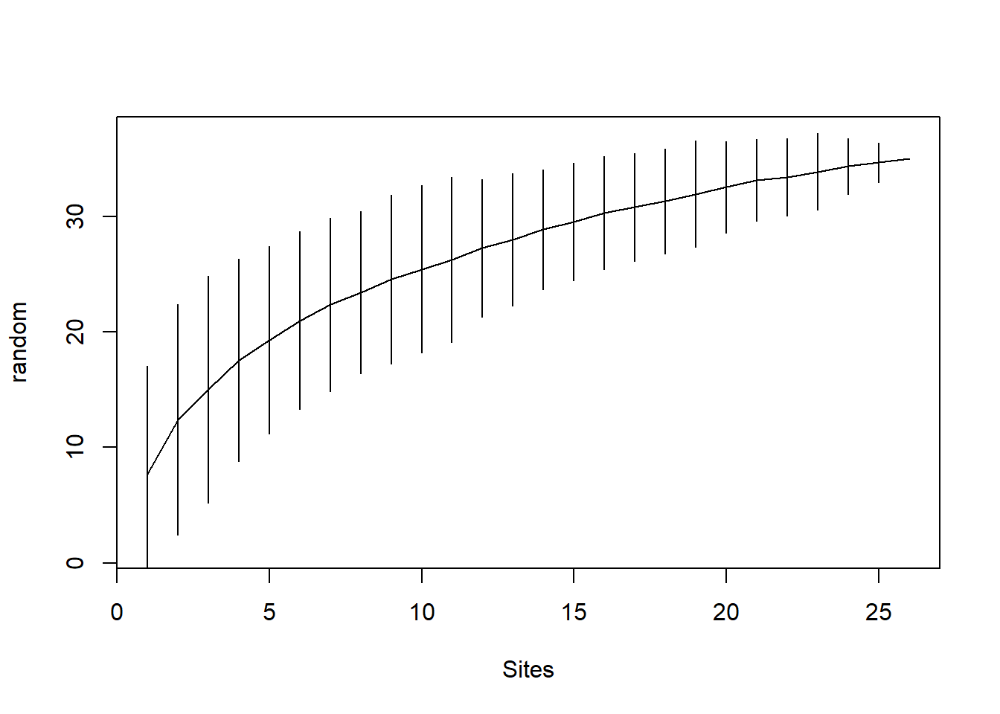
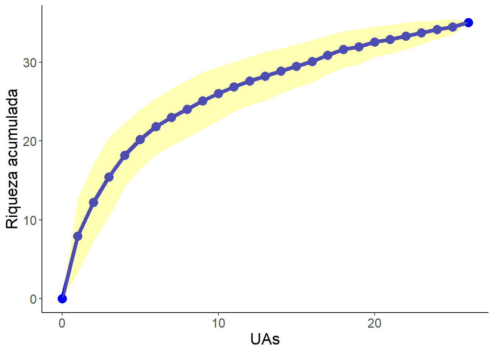
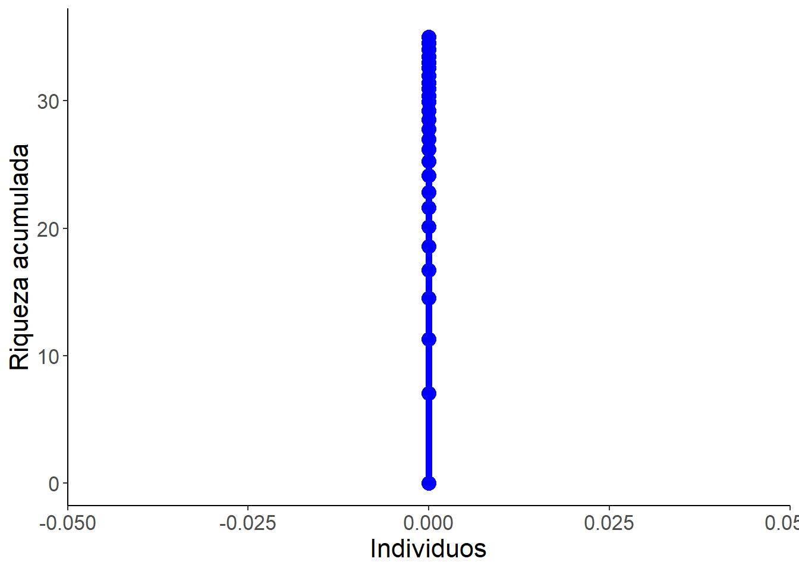

10 R Modulo 4.1 - Estrutura da Comunidade
RESUMO
Na ecologia de comunidades, a diversidade de espécies é uma medida importante para entender a complexidade e a estrutura de uma comunidade de organismos. Vamos explorar algumas das métricas comuns usadas para avaliar a diversidade de espécies.
Apresentação
Na ecologia de comunidades, a diversidade de espécies é uma medida importante para entender a complexidade e a estrutura de uma comunidade de organismos. Vamos explorar algumas das métricas comuns usadas para avaliar a diversidade de espécies. Essas métricas são usadas para avaliar a diversidade e a estrutura de comunidades ecológicas. Elas podem fornecer informações importantes sobre como as diferentes espécies interagem em um ecossistema e como a diversidade de espécies pode ser afetada por mudanças ambientais ou distúrbios (MAGURRAN, 1988).
10.1 Sobre os dados
Usaremos para esse tutorial dois conjuntos de dados. A Matriz comunitária (ppbio06c-peixes.xlsx) de dados coletados no Programa de Pesquisa em Biodiversidade - PPBio (Veja Programa de Pesquisa em Biodiversidade – PPBio). Esses são dados de espécies de peixes distribuidas em diversas unidades amostrais (UA’s ou sítios). Essa é a matriz bruta de dados, porque os valores ainda não foram ajustados para os valores de Captura Por Unidade de Esforço (CPUE), nem foram relativizados ou transformados.
Além disso usaremos a tabela de agrupamentos (ppbio06-grupos)
Revise as informações sobre as bases de dados no Capítulo 3. A matriz de dados para esse Módulo pode ser baixada na Seção 3.2.
10.2 Organização básica
dev.off() #apaga os graficos, se houver algum
rm(list=ls(all=TRUE)) #limpa a memória
cat("\014") #limpa o console Instalando os pacotes necessários para esse módulo.
install.packages("vegan")
install.packages("moments")
install.packages("ggplot2")
install.packages("dplyr")
install.packages("tidyr")
install.packages("tibble")
install.packages("tidyverse") #atente para alguma msg de erro qdo executar essa linha
install.packages("forcats")
install.packages("iNEXT")
install.packages("openxlsx")
install.packages("gt")Depois de instalados, carregue os pacotes a seguir no seu computador.
library(tibble); library(tidyverse); library(forcats); library(openxlsx); library(Rcpp)Os códigos acima, são usados para instalar e carregar os pacotes necessários para este módulo. Esses códigos são comandos para instalar pacotes no R. Um pacote é uma coleção de funções, dados e documentação que ampliam as capacidades do R (R CRAN, (TEAM, R. D. C., 2017)) e RStudio (TEAM, R. S., 2022)). No exemplo acima, o pacote openxlsx permite ler e escrever arquivos Excel no R. Para instalar um pacote no R, você precisa usar a função install.packages().
Depois de instalar um pacote, você precisa carregá-lo na sua sessão R com a função library(). Por exemplo, para carregar o pacote openxlsx, você precisa executar a função library(openxlsx). Isso irá permitir que você use as funções do pacote na sua sessão R. Você precisa carregar um pacote toda vez que iniciar uma nova sessão R e quiser usar um pacote instalado.
Agora vamos definir o diretório de trabalho. Esse código é usado para obter e definir o diretório de trabalho atual no R. O comando getwd() retorna o caminho do diretório onde o R está lendo e salvando arquivos. O comando setwd() muda esse diretório de trabalho para o caminho especificado entre aspas. No seu caso, você deve ajustar o caminho para o seu próprio diretório de trabalho. Lembre de usar a barra “/” entre os diretórios. E não a contra-barra “\”.
getwd()
setwd("C:/Seu/Diretório/De/Trabalho")10.3 Importando a planilha
Note que o símbolo # em programação R significa que o texto que vem depois dele é um comentário e não será executado pelo programa. Isso é útil para explicar o código ou deixar anotações.
- Ajuste a primeira linha do código abaixo para refletir “C:/Seu/Diretório/De/Trabalho/Planilha.xlsx”.
- Ajuste o parâmetro sheet = "Sheet1" para refletir a aba correta do arquivo .xlsx a ser importado.
#dir <- getwd() #criamos um vetor com o diretório de trbalho
#shell.exec(dir) #abre o diretorio de trabalho no Windows Explorer
ppbio <- read.xlsx("D:/Elvio/OneDrive/Disciplinas/_EcoNumerica/5.Matrizes/ppbio06-peixes.xlsx",
rowNames = T, colNames = T,
sheet = "Sheet1")
str(ppbio)
#View(ppbio)
ppbio[1:5,1:5] #[1:5,1:5] mostra apenas as linhas e colunas de 1 a 5.## 'data.frame': 26 obs. of 35 variables:
## $ ap-davis : num 0 0 0 0 0 0 0 0 0 0 ...
## $ as-bimac : num 1 99 194 19 23 142 5 46 206 16 ...
## $ as-fasci : num 0 0 55 0 1 3 1 0 64 0 ...
## $ ch-bimac : num 0 0 0 0 13 3 0 178 0 0 ...
## $ ci-ocela : num 0 0 0 0 0 0 40 0 0 13 ...
## $ ci-orien : num 0 0 5 0 0 69 9 0 25 24 ...
## $ co-macro : num 0 0 0 0 0 0 0 0 0 0 ...
## $ co-heter : num 0 0 1 0 0 0 0 0 0 0 ...
## $ cr-menez : num 0 0 14 0 0 4 0 0 8 0 ...
## $ cu-lepid : num 0 0 0 0 0 0 0 0 0 0 ...
## $ cy-gilbe : num 0 0 0 0 0 0 0 0 0 0 ...
## $ ge-brasi : num 0 0 3 0 0 0 0 0 1 0 ...
## $ he-margi : num 0 0 0 0 0 1 0 0 0 0 ...
## $ ho-malab : num 0 0 1 5 0 17 10 2 31 4 ...
## $ hy-pusar : num 0 0 9 2 0 43 2 0 11 0 ...
## $ le-melan : num 0 0 0 0 0 0 0 0 0 0 ...
## $ le-piau : num 0 0 3 0 0 1 3 0 2 1 ...
## $ le-taeni : num 0 0 0 0 0 0 0 0 0 0 ...
## $ mo-costa : num 0 0 0 0 0 0 0 0 0 0 ...
## $ mo-lepid : num 0 1 39 0 0 1 0 0 0 0 ...
## $ or-nilot : num 0 2 36 0 0 77 0 0 138 0 ...
## $ pa-manag : num 0 0 0 0 0 0 0 0 0 0 ...
## $ pimel-sp : num 0 0 6 0 0 0 0 0 0 0 ...
## $ po-retic : num 0 0 0 0 0 20 0 0 5 0 ...
## $ po-vivip : num 0 0 47 15 0 221 32 0 326 10 ...
## $ pr-brevi : num 9 0 5 0 1 15 5 2 164 0 ...
## $ ps-rhomb : num 0 0 0 0 0 0 0 0 1 0 ...
## $ ps-genise: num 0 0 0 0 0 0 0 0 1 0 ...
## $ se-heter : num 0 0 40 14 4 60 0 0 38 0 ...
## $ se-piaba : num 0 0 68 0 0 0 0 0 0 0 ...
## $ se-spilo : num 0 0 0 0 0 0 0 0 1 0 ...
## $ st-noton : num 0 0 1 0 0 25 0 0 115 0 ...
## $ sy-marmo : num 0 0 0 0 0 0 1 0 0 0 ...
## $ te-chalc : num 0 0 0 0 0 0 0 0 0 0 ...
## $ tr-signa : num 0 0 18 0 0 15 0 0 7 0 ...
## ap-davis as-bimac as-fasci ch-bimac ci-ocela
## S-A-ZA1 0 1 0 0 0
## S-R-CC1 0 99 0 0 0
## S-R-CT1 0 194 55 0 0
## S-R-CP1 0 19 0 0 0
## S-A-TA1 0 23 1 13 0Exibindo os dados importados (esses comando são “case-sensitive” ignore.case(object)).
#View(ppbio)
print(ppbio[1:8,1:8])
ppbio[1:10,1:10]
str(ppbio)
mode(ppbio)
class(ppbio)10.4 Reset point
m_trab <- ppbio
#pat <- "^S"
#m_trab <- m_trab[!grepl(pat, rownames(m_trab)), ] #exclui quem começa com patAqui cria-se um novo objeto do R (m_trab, ou a matriz de trabalho, para esse momento) que substitui a matriz de dados original, por uma nova matriz que pode ser a matriz relativizada, transformada, transposta, etc. Dessa forma, mantemos a matriz de dados original caso precisemos dela novamente (Veja a Tabela ??).
Revise Seção 3.2.2 e a Tabela de Abreviações (@ref(tab:200m_2)) na mesma Seção que resumem os tipos de matrizes e suas abreviações, para os nossos códigos.
10.5 Transpor a matriz para trabalhar com as espécies
Vamos transpor a matriz para trabalharmos com as espécies. A função t transpõe a matriz. Só deve ser usada uma vez, pois se repetida com Ctrl+Enter continua “girando” a matriz. As espécies como colunas representam uma matriz comunitária e as espécies como linhas representam uma matriz (comunitária) transposta.
m_trab <- t(ppbio)
str(m_trab)
#View(m_trab)
m_trab
print(m_trab[1:5,1:5])
m_trab[1:5,1:5]
str(m_trab)
mode(m_trab)
class(m_trab)## num [1:35, 1:26] 0 1 0 0 0 0 0 0 0 0 ...
## - attr(*, "dimnames")=List of 2
## ..$ : chr [1:35] "ap-davis" "as-bimac" "as-fasci" "ch-bimac" ...
## ..$ : chr [1:26] "S-A-ZA1" "S-R-CC1" "S-R-CT1" "S-R-CP1" ...
## S-A-ZA1 S-R-CC1 S-R-CT1 S-R-CP1 S-A-TA1 S-R-CT2 S-R-CP2 S-A-TA2
## ap-davis 0 0 0 0 0 0 0 0
## as-bimac 1 99 194 19 23 142 5 46
## as-fasci 0 0 55 0 1 3 1 0
## ch-bimac 0 0 0 0 13 3 0 178
## ci-ocela 0 0 0 0 0 0 40 0
## ci-orien 0 0 5 0 0 69 9 0
## co-macro 0 0 0 0 0 0 0 0
## co-heter 0 0 1 0 0 0 0 0
## cr-menez 0 0 14 0 0 4 0 0
## cu-lepid 0 0 0 0 0 0 0 0
## cy-gilbe 0 0 0 0 0 0 0 0
## ge-brasi 0 0 3 0 0 0 0 0
## he-margi 0 0 0 0 0 1 0 0
## ho-malab 0 0 1 5 0 17 10 2
## hy-pusar 0 0 9 2 0 43 2 0
## le-melan 0 0 0 0 0 0 0 0
## le-piau 0 0 3 0 0 1 3 0
## le-taeni 0 0 0 0 0 0 0 0
## mo-costa 0 0 0 0 0 0 0 0
## mo-lepid 0 1 39 0 0 1 0 0
## or-nilot 0 2 36 0 0 77 0 0
## pa-manag 0 0 0 0 0 0 0 0
## pimel-sp 0 0 6 0 0 0 0 0
## po-retic 0 0 0 0 0 20 0 0
## po-vivip 0 0 47 15 0 221 32 0
## pr-brevi 9 0 5 0 1 15 5 2
## ps-rhomb 0 0 0 0 0 0 0 0
## ps-genise 0 0 0 0 0 0 0 0
## se-heter 0 0 40 14 4 60 0 0
## se-piaba 0 0 68 0 0 0 0 0
## se-spilo 0 0 0 0 0 0 0 0
## st-noton 0 0 1 0 0 25 0 0
## sy-marmo 0 0 0 0 0 0 1 0
## te-chalc 0 0 0 0 0 0 0 0
## tr-signa 0 0 18 0 0 15 0 0
## S-R-CT3 S-R-CP3 S-A-TA3 S-R-CT4 S-R-CP4 S-A-TA4 B-A-MU1 B-R-ET1
## ap-davis 0 0 0 0 0 0 0 0
## as-bimac 206 16 234 0 0 394 12 3
## as-fasci 64 0 7 1 0 0 0 0
## ch-bimac 0 0 238 0 0 273 0 0
## ci-ocela 0 13 0 0 11 0 0 0
## ci-orien 25 24 0 5 6 0 0 0
## co-macro 0 0 2 0 0 0 0 0
## co-heter 0 0 0 0 0 0 0 0
## cr-menez 8 0 0 1 0 1 0 0
## cu-lepid 0 0 0 0 0 0 0 0
## cy-gilbe 0 0 0 50 0 0 0 0
## ge-brasi 1 0 0 3 0 1 190 0
## he-margi 0 0 0 1 0 0 0 0
## ho-malab 31 4 20 4 2 9 0 0
## hy-pusar 11 0 0 3 0 0 0 0
## le-melan 0 0 0 0 0 0 0 0
## le-piau 2 1 0 0 2 2 0 0
## le-taeni 0 0 0 0 0 0 0 0
## mo-costa 0 0 0 0 0 0 0 0
## mo-lepid 0 0 0 0 0 0 0 0
## or-nilot 138 0 0 73 0 1 6 8
## pa-manag 0 0 0 0 0 0 0 1
## pimel-sp 0 0 0 0 0 0 0 0
## po-retic 5 0 0 0 0 0 0 34
## po-vivip 326 10 0 28 80 0 0 0
## pr-brevi 164 0 0 59 0 3 0 0
## ps-rhomb 1 0 0 0 0 0 0 0
## ps-genise 1 0 0 0 0 0 0 0
## se-heter 38 0 0 3 3 0 0 0
## se-piaba 0 0 0 0 0 0 0 0
## se-spilo 1 0 0 0 0 0 0 0
## st-noton 115 0 0 64 0 0 0 0
## sy-marmo 0 0 0 0 0 0 0 0
## te-chalc 0 0 0 0 0 0 0 0
## tr-signa 7 0 0 141 0 0 0 0
## B-A-GU1 B-R-PC2 B-A-MU2 B-A-GU2 B-R-PC3 B-A-MU3 B-A-GU3 B-R-PC4
## ap-davis 0 5 0 0 22 0 0 0
## as-bimac 2 44 99 0 75 511 6 7
## as-fasci 2 0 0 0 7 0 0 17
## ch-bimac 0 0 0 0 0 0 0 0
## ci-ocela 0 2 0 0 4 0 0 0
## ci-orien 0 0 0 0 0 0 0 0
## co-macro 0 0 0 0 0 0 0 0
## co-heter 0 0 0 0 0 0 0 0
## cr-menez 0 0 0 0 0 0 0 0
## cu-lepid 0 0 0 0 21 0 0 0
## cy-gilbe 0 0 0 0 0 0 0 81
## ge-brasi 7 8 67 23 16 145 32 5
## he-margi 0 0 0 0 0 0 0 0
## ho-malab 0 0 1 0 2 0 0 1
## hy-pusar 0 0 0 0 1 0 0 0
## le-melan 0 2 0 0 0 0 0 0
## le-piau 0 0 0 0 0 0 0 1
## le-taeni 0 1 0 0 0 0 0 0
## mo-costa 0 0 0 0 1 0 0 0
## mo-lepid 0 0 0 0 0 0 0 0
## or-nilot 3 5 1 36 65 11 247 9
## pa-manag 11 0 0 102 0 0 250 0
## pimel-sp 0 0 0 0 0 0 0 0
## po-retic 0 0 10 0 0 46 0 0
## po-vivip 0 0 8 0 0 48 0 0
## pr-brevi 0 9 0 0 6 1 0 0
## ps-rhomb 0 0 0 0 0 0 0 0
## ps-genise 0 0 0 0 0 0 0 0
## se-heter 0 10 0 0 93 0 0 31
## se-piaba 0 0 0 0 0 0 0 0
## se-spilo 0 0 0 0 0 0 0 0
## st-noton 0 0 0 0 0 0 0 0
## sy-marmo 0 0 0 0 0 0 0 0
## te-chalc 0 76 0 0 58 0 0 0
## tr-signa 0 23 0 0 0 0 0 4
## B-A-MU4 B-A-GU4
## ap-davis 0 0
## as-bimac 235 13
## as-fasci 0 0
## ch-bimac 0 0
## ci-ocela 0 0
## ci-orien 0 0
## co-macro 0 0
## co-heter 0 0
## cr-menez 0 0
## cu-lepid 0 0
## cy-gilbe 0 0
## ge-brasi 509 10
## he-margi 0 0
## ho-malab 0 0
## hy-pusar 0 0
## le-melan 0 0
## le-piau 0 0
## le-taeni 0 0
## mo-costa 0 0
## mo-lepid 0 0
## or-nilot 1 129
## pa-manag 0 190
## pimel-sp 0 0
## po-retic 266 0
## po-vivip 163 0
## pr-brevi 0 0
## ps-rhomb 0 0
## ps-genise 0 0
## se-heter 0 0
## se-piaba 0 0
## se-spilo 0 0
## st-noton 0 0
## sy-marmo 0 0
## te-chalc 0 0
## tr-signa 0 0
## S-A-ZA1 S-R-CC1 S-R-CT1 S-R-CP1 S-A-TA1
## ap-davis 0 0 0 0 0
## as-bimac 1 99 194 19 23
## as-fasci 0 0 55 0 1
## ch-bimac 0 0 0 0 13
## ci-ocela 0 0 0 0 0
## S-A-ZA1 S-R-CC1 S-R-CT1 S-R-CP1 S-A-TA1
## ap-davis 0 0 0 0 0
## as-bimac 1 99 194 19 23
## as-fasci 0 0 55 0 1
## ch-bimac 0 0 0 0 13
## ci-ocela 0 0 0 0 0
## num [1:35, 1:26] 0 1 0 0 0 0 0 0 0 0 ...
## - attr(*, "dimnames")=List of 2
## ..$ : chr [1:35] "ap-davis" "as-bimac" "as-fasci" "ch-bimac" ...
## ..$ : chr [1:26] "S-A-ZA1" "S-R-CC1" "S-R-CT1" "S-R-CP1" ...
## [1] "numeric"
## [1] "matrix" "array"10.5.1 Informações básicas da matriz
Agora podemos pedir ao R as informações básicas da matriz de trabalho (m_trab), como o número de observações ou tamanho do vetor (depende do tipo da matriz), número de observações igual a zero, número de observaçõoes maiores que zero e proporção de zeros na matriz.
range(m_trab) #menor e maior valores
length(m_trab) #no. de colunas
ncol(m_trab) #no. de N colunas
nrow(m_trab) #no. de M linhas
sum(lengths(m_trab)) #soma os nos. de colunas
length(as.matrix(m_trab)) #tamanho da matriz m x n
sum(m_trab == 0) #número de observações igual a zero
sum(m_trab > 0) #número de observações maiores que zero
#calculando a proporção de zeros na matriz
zeros <- (sum(m_trab == 0)/length(as.matrix(m_trab)))*100
zeros## [1] 0 511
## [1] 910
## [1] 26
## [1] 35
## [1] 910
## [1] 910
## [1] 716
## [1] 194
## [1] 78.68132Tabela que resume as informações geradas (Tabela 10.1).
## Função Resultado
## 1 range 0 - 511
## 2 lenght 910
## 3 n cols 26
## 4 m linhas 35
## 5 Tamanho 910
## 6 Tamanho 910
## 7 Zeros 716
## 8 Nao zeros 194
## 9 % Zeros 78.7| Função | Resultado |
|---|---|
| range | 0 - 511 |
| lenght | 910 |
| n cols | 26 |
| m linhas | 35 |
| Tamanho | 910 |
| Tamanho | 910 |
| Zeros | 716 |
| Nao zeros | 194 |
| % Zeros | 78.7 |
Ou seja, temos uma matriz de tamanho m x n igual a 35 objetos por 26 atributos, onde 78.68% dos valores da matriz são iguais a zero!
Agora de conhecimento dessas informações básicas podemos calcular os primeiros descritores da estrutura da comunidade a ser estudada.
10.6 Calculando os descritores da comunidade
Entre outras métricas, calcularemos os seguntes índices:
- Riqueza de Espécies:
- A riqueza de espécies simplesmente se refere ao número total de espécies diferentes em uma comunidade. É uma medida fundamental da diversidade ecológica e reflete a variedade de formas de vida coexistentes em um ecossistema. Comunidades com alta riqueza de espécies têm um grande número de espécies diferentes, enquanto comunidades com baixa riqueza têm menos espécies.
- Índice de Diversidade de Simpson:
- O índice de diversidade de Simpson (ou índice de Simpson) mede a probabilidade de escolher aleatoriamente duas vezes o mesmo indivíduo de uma comunidade. Quanto mais próximo de 1 for o índice de Simpson, menor é a diversidade, indicando que uma ou algumas espécies dominam a comunidade. Quanto mais próximo de 0 for o índice de Simpson, maior é a diversidade, indicando uma comunidade mais equilibrada.
- Índice de Diversidade de Shannon-Wiener:
- O índice de Shannon-Wiener (ou índice de Shannon) leva em consideração a riqueza de espécies e a equitabilidade (distribuição uniforme das abundâncias das espécies). Ele mede a incerteza associada à identificação de uma espécie aleatória em uma comunidade. Quanto maior o índice de Shannon, maior é a diversidade, pois indica uma comunidade com várias espécies bem distribuídas em termos de abundância.
- Equitabilidade:
- A equitabilidade é uma medida que avalia o quão uniformemente as abundâncias das diferentes espécies estão distribuídas em uma comunidade. Quanto maior a equitabilidade, mais igual é a distribuição das abundâncias, o que indica uma comunidade mais equilibrada.
- Abundância:
- A abundância se refere ao número total de indivíduos de uma espécie em uma comunidade. É uma medida simples que indica quantos indivíduos de uma espécie específica estão presentes na comunidade.
- Abundância Relativa:
- A abundância relativa é a proporção ou a fração da abundância de uma espécie em relação à abundância total de todas as espécies na comunidade. É uma medida que ajuda a entender a importância relativa de cada espécie na comunidade.
- Dominância de Espécies:
- A dominância de espécies se refere à presença de uma ou algumas espécies que têm uma abundância significativamente maior do que as outras na comunidade. Comunidades com alta dominância são frequentemente menos diversas, pois algumas espécies dominantes podem suprimir o crescimento de outras.
10.6.1 Variabilidade
Primeiro a variabilidade estatística
#?apply
Sum <- rowSums(m_trab)
#ou
Sum <- apply(m_trab,1,sum)
Sum
## Abundância relativa (%)
RA <- (Sum / sum(Sum)) * 100 # percentage
## Media
Mean <- rowMeans(m_trab)
Mean
## Ou
Mean <- apply(m_trab,1,mean)
Mean
## Desvio padrão
DP <- apply(m_trab,1,sd)
DP
## Máximo
Max <- apply(m_trab,1,max)
Max
## Mínimo
Min <- apply(m_trab,1,min)
Min
## Mínimo não-zero
MinZ <- apply(m_trab, 1, function(row) {
non_zero_values <- row[row > 0] # Filter out zero values
if (length(non_zero_values) == 0) {
return(0) # If all values are zero, return 0
} else {
return(min(non_zero_values)) # Return the minimum of non-zero values
}
})
MinZ## ap-davis as-bimac as-fasci ch-bimac ci-ocela ci-orien co-macro co-heter
## 27 2386 158 705 70 143 2 1
## cr-menez cu-lepid cy-gilbe ge-brasi he-margi ho-malab hy-pusar le-melan
## 28 21 131 1020 2 109 71 2
## le-piau le-taeni mo-costa mo-lepid or-nilot pa-manag pimel-sp po-retic
## 15 1 1 41 848 554 6 381
## po-vivip pr-brevi ps-rhomb ps-genise se-heter se-piaba se-spilo st-noton
## 978 279 1 1 296 68 1 205
## sy-marmo te-chalc tr-signa
## 1 134 208
## ap-davis as-bimac as-fasci ch-bimac ci-ocela ci-orien
## 1.03846154 91.76923077 6.07692308 27.11538462 2.69230769 5.50000000
## co-macro co-heter cr-menez cu-lepid cy-gilbe ge-brasi
## 0.07692308 0.03846154 1.07692308 0.80769231 5.03846154 39.23076923
## he-margi ho-malab hy-pusar le-melan le-piau le-taeni
## 0.07692308 4.19230769 2.73076923 0.07692308 0.57692308 0.03846154
## mo-costa mo-lepid or-nilot pa-manag pimel-sp po-retic
## 0.03846154 1.57692308 32.61538462 21.30769231 0.23076923 14.65384615
## po-vivip pr-brevi ps-rhomb ps-genise se-heter se-piaba
## 37.61538462 10.73076923 0.03846154 0.03846154 11.38461538 2.61538462
## se-spilo st-noton sy-marmo te-chalc tr-signa
## 0.03846154 7.88461538 0.03846154 5.15384615 8.00000000
## ap-davis as-bimac as-fasci ch-bimac ci-ocela ci-orien
## 1.03846154 91.76923077 6.07692308 27.11538462 2.69230769 5.50000000
## co-macro co-heter cr-menez cu-lepid cy-gilbe ge-brasi
## 0.07692308 0.03846154 1.07692308 0.80769231 5.03846154 39.23076923
## he-margi ho-malab hy-pusar le-melan le-piau le-taeni
## 0.07692308 4.19230769 2.73076923 0.07692308 0.57692308 0.03846154
## mo-costa mo-lepid or-nilot pa-manag pimel-sp po-retic
## 0.03846154 1.57692308 32.61538462 21.30769231 0.23076923 14.65384615
## po-vivip pr-brevi ps-rhomb ps-genise se-heter se-piaba
## 37.61538462 10.73076923 0.03846154 0.03846154 11.38461538 2.61538462
## se-spilo st-noton sy-marmo te-chalc tr-signa
## 0.03846154 7.88461538 0.03846154 5.15384615 8.00000000
## ap-davis as-bimac as-fasci ch-bimac ci-ocela ci-orien
## 4.3861671 132.4348316 16.2035134 75.8732242 8.2982853 14.6184815
## co-macro co-heter cr-menez cu-lepid cy-gilbe ge-brasi
## 0.3922323 0.1961161 3.1486261 4.1184388 18.3313519 106.3478473
## he-margi ho-malab hy-pusar le-melan le-piau le-taeni
## 0.2717465 7.6053625 8.6605205 0.3922323 0.9868364 0.1961161
## mo-costa mo-lepid or-nilot pa-manag pimel-sp po-retic
## 0.1961161 7.6376597 59.1452970 62.3928004 1.1766968 52.5242362
## po-vivip pr-brevi ps-rhomb ps-genise se-heter se-piaba
## 79.5004790 33.3892889 0.1961161 0.1961161 22.9905666 13.3358972
## se-spilo st-noton sy-marmo te-chalc tr-signa
## 0.1961161 25.5582893 0.1961161 18.3841068 27.8280434
## ap-davis as-bimac as-fasci ch-bimac ci-ocela ci-orien co-macro co-heter
## 22 511 64 273 40 69 2 1
## cr-menez cu-lepid cy-gilbe ge-brasi he-margi ho-malab hy-pusar le-melan
## 14 21 81 509 1 31 43 2
## le-piau le-taeni mo-costa mo-lepid or-nilot pa-manag pimel-sp po-retic
## 3 1 1 39 247 250 6 266
## po-vivip pr-brevi ps-rhomb ps-genise se-heter se-piaba se-spilo st-noton
## 326 164 1 1 93 68 1 115
## sy-marmo te-chalc tr-signa
## 1 76 141
## ap-davis as-bimac as-fasci ch-bimac ci-ocela ci-orien co-macro co-heter
## 0 0 0 0 0 0 0 0
## cr-menez cu-lepid cy-gilbe ge-brasi he-margi ho-malab hy-pusar le-melan
## 0 0 0 0 0 0 0 0
## le-piau le-taeni mo-costa mo-lepid or-nilot pa-manag pimel-sp po-retic
## 0 0 0 0 0 0 0 0
## po-vivip pr-brevi ps-rhomb ps-genise se-heter se-piaba se-spilo st-noton
## 0 0 0 0 0 0 0 0
## sy-marmo te-chalc tr-signa
## 0 0 0
## ap-davis as-bimac as-fasci ch-bimac ci-ocela ci-orien co-macro co-heter
## 5 1 1 3 2 5 2 1
## cr-menez cu-lepid cy-gilbe ge-brasi he-margi ho-malab hy-pusar le-melan
## 1 21 50 1 1 1 1 2
## le-piau le-taeni mo-costa mo-lepid or-nilot pa-manag pimel-sp po-retic
## 1 1 1 1 1 1 6 5
## po-vivip pr-brevi ps-rhomb ps-genise se-heter se-piaba se-spilo st-noton
## 8 1 1 1 3 68 1 1
## sy-marmo te-chalc tr-signa
## 1 58 410.6.2 Riqueza
Atente para o fato de que a riqueza será a frequêcia de ocorrência na matrix transposta. Converte-se primeiro para matriz binária.
m_pa <- m_trab
m_pa[m_pa != 0] <- 1
rowSums(m_pa)
library(vegan)
bin <- decostand(m_trab,"pa")
bin[1:10, 1:10]
S <- apply(bin,1,sum)
S
#OU
Riqueza <- specnumber(m_trab)
Riqueza
Riqueza_total <- specnumber(colSums(m_trab))
Riqueza_total
#OU
FO <- rowSums(m_trab > 0) / ncol(m_trab) * 100
FO## ap-davis as-bimac as-fasci ch-bimac ci-ocela ci-orien co-macro co-heter
## 2 23 10 5 5 7 1 1
## cr-menez cu-lepid cy-gilbe ge-brasi he-margi ho-malab hy-pusar le-melan
## 5 1 2 15 2 14 7 1
## le-piau le-taeni mo-costa mo-lepid or-nilot pa-manag pimel-sp po-retic
## 8 1 1 3 18 5 1 6
## po-vivip pr-brevi ps-rhomb ps-genise se-heter se-piaba se-spilo st-noton
## 11 12 1 1 10 1 1 4
## sy-marmo te-chalc tr-signa
## 1 2 6
## S-A-ZA1 S-R-CC1 S-R-CT1 S-R-CP1 S-A-TA1 S-R-CT2 S-R-CP2 S-A-TA2
## ap-davis 0 0 0 0 0 0 0 0
## as-bimac 1 1 1 1 1 1 1 1
## as-fasci 0 0 1 0 1 1 1 0
## ch-bimac 0 0 0 0 1 1 0 1
## ci-ocela 0 0 0 0 0 0 1 0
## ci-orien 0 0 1 0 0 1 1 0
## co-macro 0 0 0 0 0 0 0 0
## co-heter 0 0 1 0 0 0 0 0
## cr-menez 0 0 1 0 0 1 0 0
## cu-lepid 0 0 0 0 0 0 0 0
## S-R-CT3 S-R-CP3
## ap-davis 0 0
## as-bimac 1 1
## as-fasci 1 0
## ch-bimac 0 0
## ci-ocela 0 1
## ci-orien 1 1
## co-macro 0 0
## co-heter 0 0
## cr-menez 1 0
## cu-lepid 0 0
## ap-davis as-bimac as-fasci ch-bimac ci-ocela ci-orien co-macro co-heter
## 2 23 10 5 5 7 1 1
## cr-menez cu-lepid cy-gilbe ge-brasi he-margi ho-malab hy-pusar le-melan
## 5 1 2 15 2 14 7 1
## le-piau le-taeni mo-costa mo-lepid or-nilot pa-manag pimel-sp po-retic
## 8 1 1 3 18 5 1 6
## po-vivip pr-brevi ps-rhomb ps-genise se-heter se-piaba se-spilo st-noton
## 11 12 1 1 10 1 1 4
## sy-marmo te-chalc tr-signa
## 1 2 6
## ap-davis as-bimac as-fasci ch-bimac ci-ocela ci-orien co-macro co-heter
## 2 23 10 5 5 7 1 1
## cr-menez cu-lepid cy-gilbe ge-brasi he-margi ho-malab hy-pusar le-melan
## 5 1 2 15 2 14 7 1
## le-piau le-taeni mo-costa mo-lepid or-nilot pa-manag pimel-sp po-retic
## 8 1 1 3 18 5 1 6
## po-vivip pr-brevi ps-rhomb ps-genise se-heter se-piaba se-spilo st-noton
## 11 12 1 1 10 1 1 4
## sy-marmo te-chalc tr-signa
## 1 2 6
## [1] 26
## ap-davis as-bimac as-fasci ch-bimac ci-ocela ci-orien co-macro co-heter
## 7.692308 88.461538 38.461538 19.230769 19.230769 26.923077 3.846154 3.846154
## cr-menez cu-lepid cy-gilbe ge-brasi he-margi ho-malab hy-pusar le-melan
## 19.230769 3.846154 7.692308 57.692308 7.692308 53.846154 26.923077 3.846154
## le-piau le-taeni mo-costa mo-lepid or-nilot pa-manag pimel-sp po-retic
## 30.769231 3.846154 3.846154 11.538462 69.230769 19.230769 3.846154 23.076923
## po-vivip pr-brevi ps-rhomb ps-genise se-heter se-piaba se-spilo st-noton
## 42.307692 46.153846 3.846154 3.846154 38.461538 3.846154 3.846154 15.384615
## sy-marmo te-chalc tr-signa
## 3.846154 7.692308 23.07692310.7 Índices de Diversidade
10.7.1 Shannon
O índice de diversidade de Shannon ou Shannon–Weaver (or Shannon–Wiener) é uma medida de diversidade que leva em consideração tanto a riqueza de espécies quanto a uniformidade na distribuição dessas espécies (DIXON, 2003; OKSANEN et al., 2020). Este índice é definido por:
\[ H' = -\sum_{i} p_i\log_{b} p_i \] Onde:
- \(H'\) é a entropia de Shannon.
- \(p_i\) é a abundância proporcional da espécie \(i\).
- \(b\) é a base do logaritmo.
É mais comum usar-se o logarítmo natural, embora pode-se argumentar que para o logarítmo de base = 2 (o que faz sentido mas nenhuma diferença)
Outra fórmula para calcular o índice de diversidade de Shannon é:
\[ H' = -\sum_{i=1}^{S} \left( \frac{n_i}{N} \times \ln\frac{n_i}{N} \right) \]
Onde:
- \(H'\) é a entropia de Shannon (ou a diversidade de Shannon).
- \(n_i\) é o número de indivíduos da espécie \(i\).
- \(N\) é o número total de indivíduos na comunidade.
- \(S\) é o número total de espécies na comunidade.
Esta fórmula mede a incerteza (ou entropia) na identificação de uma espécie selecionada aleatoriamente da comunidade. Quanto maior o valor de \(H'\), maior a diversidade da comunidade.
H <- diversity(m_trab, index = "shannon")
H## ap-davis as-bimac as-fasci ch-bimac ci-ocela ci-orien co-macro co-heter
## 0.4791656 2.4239775 1.4761308 1.1783625 1.1883832 1.4976803 0.0000000 0.0000000
## cr-menez cu-lepid cy-gilbe ge-brasi he-margi ho-malab hy-pusar le-melan
## 1.2205076 0.0000000 0.6648803 1.5668772 0.6931472 2.1167591 1.2492728 0.0000000
## le-piau le-taeni mo-costa mo-lepid or-nilot pa-manag pimel-sp po-retic
## 1.9913464 0.0000000 0.0000000 0.2287207 2.1072815 1.1268689 0.0000000 1.0288585
## po-vivip pr-brevi ps-rhomb ps-genise se-heter se-piaba se-spilo st-noton
## 1.8633952 1.3708151 0.0000000 0.0000000 1.8675926 0.0000000 0.0000000 0.9702899
## sy-marmo te-chalc tr-signa
## 0.0000000 0.6840978 1.098569310.7.2 Simpson
O índice de diversidade de Simpson é uma medida de diversidade que leva em consideração a riqueza de espécies e a abundância relativa de cada espécie em uma comunidade. A fórmula para calcular o índice de diversidade de Simpson é:
\[ D = 1 - \sum_{i=1}^{S} \left( \frac{n_i (n_i - 1)}{N (N - 1)} \right) \]
Onde:
- \(D\) é o índice de diversidade de Simpson.
- \(n_i\) é o número de indivíduos da espécie \(i\).
- \(N\) é o número total de indivíduos na comunidade.
- \(S\) é o número total de espécies na comunidade.
Esta fórmula fornece um valor entre 0 e 1, onde 0 indica uma comunidade com apenas uma espécie presente e 1 indica uma comunidade com uma distribuição uniforme de espécies.
Existem duas variantes do índice de Simpson baseado em \(D = \sum p_i^2\) (DIXON, 2003; HURLBERT, 1971; OKSANEN et al., 2020):
- Ao escolhermos
simpsono R retorna \(1 - D\), e - ao escolhermos
invsimpsono R retorna \(1/D\) .
D <- diversity(m_trab, "simpson")
D
D[is.na(D)] <- 0 #substitui NA ou NaN por 0
D## ap-davis as-bimac as-fasci ch-bimac ci-ocela ci-orien co-macro
## 0.30178326 0.88451845 0.69860599 0.67197827 0.61020408 0.70027874 0.00000000
## co-heter cr-menez cu-lepid cy-gilbe ge-brasi he-margi ho-malab
## 0.00000000 0.64540816 0.00000000 0.47200047 0.68977124 0.50000000 0.83982830
## hy-pusar le-melan le-piau le-taeni mo-costa mo-lepid or-nilot
## 0.58956556 0.00000000 0.85333333 0.00000000 0.00000000 0.09399167 0.83992302
## pa-manag pimel-sp po-retic po-vivip pr-brevi ps-rhomb ps-genise
## 0.64444343 0.00000000 0.48641164 0.79634160 0.60348659 0.00000000 0.00000000
## se-heter se-piaba se-spilo st-noton sy-marmo te-chalc tr-signa
## 0.81071950 0.00000000 0.00000000 0.57294468 0.00000000 0.49097795 0.51405325
## ap-davis as-bimac as-fasci ch-bimac ci-ocela ci-orien co-macro
## 0.30178326 0.88451845 0.69860599 0.67197827 0.61020408 0.70027874 0.00000000
## co-heter cr-menez cu-lepid cy-gilbe ge-brasi he-margi ho-malab
## 0.00000000 0.64540816 0.00000000 0.47200047 0.68977124 0.50000000 0.83982830
## hy-pusar le-melan le-piau le-taeni mo-costa mo-lepid or-nilot
## 0.58956556 0.00000000 0.85333333 0.00000000 0.00000000 0.09399167 0.83992302
## pa-manag pimel-sp po-retic po-vivip pr-brevi ps-rhomb ps-genise
## 0.64444343 0.00000000 0.48641164 0.79634160 0.60348659 0.00000000 0.00000000
## se-heter se-piaba se-spilo st-noton sy-marmo te-chalc tr-signa
## 0.81071950 0.00000000 0.00000000 0.57294468 0.00000000 0.49097795 0.5140532510.7.3 Equitabilidade de Pielou
O índice de equitabilidade de Pielou é uma medida de uniformidade em uma distribuição de espécies (PIELOU, 1975). Sua fórmula é dada por:
\[ J' = \frac{H'}{\ln(S)} \]
Onde:
- \(J'\) é o índice de equitabilidade de Pielou.
- \(H'\) é a entropia de Shannon (ou a diversidade de Shannon), que é calculada como \(-\sum_{i=1}^{S} p_i \cdot \ln(p_i)\), onde \(S\) é o número total de espécies e \(p_i\) é a proporção da espécie \(i\).
- \(\ln(S)\) é o logarítmo natural do número total de espécies na comunidade.
Esta fórmula fornece um valor entre 0 e 1, onde 0 indica uma distribuição completamente desigual onde uma comunidade apresenta uma única espécie dominante e 1 indica uma distribuição completamente equitativa onde todas as espécies têm a mesma abundância.
E <- H/log(specnumber(m_trab))
E
E[is.na(E)] <- 0 #substitui NA ou NaN por 0
E## ap-davis as-bimac as-fasci ch-bimac ci-ocela ci-orien co-macro co-heter
## 0.6912899 0.7730767 0.6410755 0.7321578 0.7383840 0.7696554 NaN NaN
## cr-menez cu-lepid cy-gilbe ge-brasi he-margi ho-malab hy-pusar le-melan
## 0.7583440 NaN 0.9592195 0.5785997 1.0000000 0.8020891 0.6419992 NaN
## le-piau le-taeni mo-costa mo-lepid or-nilot pa-manag pimel-sp po-retic
## 0.9576352 NaN NaN 0.2081906 0.7290694 0.7001630 NaN 0.5742169
## po-vivip pr-brevi ps-rhomb ps-genise se-heter se-piaba se-spilo st-noton
## 0.7770962 0.5516566 NaN NaN 0.8110852 NaN NaN 0.6999162
## sy-marmo te-chalc tr-signa
## NaN 0.9869445 0.6131232
## ap-davis as-bimac as-fasci ch-bimac ci-ocela ci-orien co-macro co-heter
## 0.6912899 0.7730767 0.6410755 0.7321578 0.7383840 0.7696554 0.0000000 0.0000000
## cr-menez cu-lepid cy-gilbe ge-brasi he-margi ho-malab hy-pusar le-melan
## 0.7583440 0.0000000 0.9592195 0.5785997 1.0000000 0.8020891 0.6419992 0.0000000
## le-piau le-taeni mo-costa mo-lepid or-nilot pa-manag pimel-sp po-retic
## 0.9576352 0.0000000 0.0000000 0.2081906 0.7290694 0.7001630 0.0000000 0.5742169
## po-vivip pr-brevi ps-rhomb ps-genise se-heter se-piaba se-spilo st-noton
## 0.7770962 0.5516566 0.0000000 0.0000000 0.8110852 0.0000000 0.0000000 0.6999162
## sy-marmo te-chalc tr-signa
## 0.0000000 0.9869445 0.613123210.7.3.1 Assimetria e curtose
A assimetria mede a falta de simetria em uma distribuição de frequência. Uma distribuição é simétrica se as duas metades à esquerda e à direita da média são cópias espelhadas uma da outra. Se a distribuição não é simétrica, então é assimétrica. A assimetria pode ser positiva, negativa ou nula (simétrica). Uma assimetria positiva indica que a cauda da distribuição se estende mais para a direita em relação à média, enquanto uma assimetria negativa indica que a cauda da distribuição se estende mais para a esquerda em relação à média.
A curtose descreve o pico ou a “pontiagudez” de uma distribuição. Uma distribuição com alta curtose tem uma alta concentração de valores ao redor da média e caudas mais pesadas (ou seja, valores extremos são mais prováveis). Uma distribuição com baixa curtose é mais achatada e dispersa, com caudas mais leves. A curtose pode ser positiva (distribuição leptocúrtica, com alta concentração em torno da média e caudas pesadas), negativa (distribuição platicúrtica, com dispersão alta e caudas mais leves) ou nula (mesocúrtica, similar à distribuição normal).
Essas medidas são úteis para compreender as propriedades e características de diferentes conjuntos de dados e distribuições de frequência. Elas ajudam a compreender a forma e o comportamento dos dados em uma amostra ou população (ZAR, 1999).
library(moments)
Assimetria <- apply(m_trab,1,skewness)
Assimetria
Curtose <- apply(m_trab,1,kurtosis)
Curtose## ap-davis as-bimac as-fasci ch-bimac ci-ocela ci-orien co-macro co-heter
## 4.469425 1.774738 2.959549 2.544388 3.796856 3.482201 4.800000 4.800000
## cr-menez cu-lepid cy-gilbe ge-brasi he-margi ho-malab hy-pusar le-melan
## 3.252387 4.800000 3.484076 3.638552 3.175426 2.282120 4.127075 4.800000
## le-piau le-taeni mo-costa mo-lepid or-nilot pa-manag pimel-sp po-retic
## 1.437653 4.800000 4.800000 4.790304 2.287297 2.867520 4.800000 4.462822
## po-vivip pr-brevi ps-rhomb ps-genise se-heter se-piaba se-spilo st-noton
## 2.544468 4.046241 4.800000 4.800000 2.293389 4.800000 4.800000 3.419722
## sy-marmo te-chalc tr-signa
## 4.800000 3.281874 4.442741
## ap-davis as-bimac as-fasci ch-bimac ci-ocela ci-orien co-macro co-heter
## 21.730097 5.556931 10.273303 7.736436 17.146010 15.065210 24.040000 24.040000
## cr-menez cu-lepid cy-gilbe ge-brasi he-margi ho-malab hy-pusar le-melan
## 12.820351 24.040000 13.776840 16.059988 11.083333 7.604321 19.499005 24.040000
## le-piau le-taeni mo-costa mo-lepid or-nilot pa-manag pimel-sp po-retic
## 3.655586 24.040000 24.040000 23.979582 7.972989 9.860393 24.040000 21.825541
## po-vivip pr-brevi ps-rhomb ps-genise se-heter se-piaba se-spilo st-noton
## 8.674340 18.659676 24.040000 24.040000 7.676958 24.040000 24.040000 13.817921
## sy-marmo te-chalc tr-signa
## 24.040000 12.021173 21.71554310.7.3.2 Tabela de descritores
Muito confuso? Criamos na sequência uma tabela final com todos os descritores da comunidade e da normalidade.
10.7.3.2.1 Descritores da estrutura da comunidade: Espécies
Sum, soma; RA, abundância relativa (%), mean, média; DP, desvio padrão da média; Max, maior valor; Min, menor valor; S, riqueza (ou frequência de ocorrência na matriz transposta); E, índice de equitabilidade de Pielou (PIELOU, 1975); H, índice de diversidade de Shannon (LUDWIG; REYNOLDS, 1988); D, índice de diversidade de Simpson (HURLBERT, 1971).
Descritores1 <- cbind(Sum, RA, Mean, DP, Max, Min, MinZ, FO, S, E, H, D)
Descritores1 <- as.data.frame(Descritores1)
Descritores1
#Descritores1 <- Descritores1 %>% rownames_to_column(var="Espécies") #da nome a primeira coluna
SomaTotalD <- apply(Descritores1,2,sum)
SomaTotalD
MediaTotalD <- apply(Descritores1,2,mean)
MediaTotalD
DPTotalD <- apply(Descritores1,2,sd)
DPTotalD
Descritores2 <- cbind(SomaTotalD, MediaTotalD, DPTotalD)
Descritores2 <- as.data.frame(Descritores2)
Descritores2 <- t(Descritores2)
Descritores2
DescritoresFinal <- rbind(Descritores1, Descritores2)
DescritoresFinal
DescritoresFinal <- round (DescritoresFinal, 2)
DescritoresFinal## Sum RA Mean DP Max Min MinZ FO S
## ap-davis 27 0.30354132 1.03846154 4.3861671 22 0 5 7.692308 2
## as-bimac 2386 26.82405846 91.76923077 132.4348316 511 0 1 88.461538 23
## as-fasci 158 1.77627881 6.07692308 16.2035134 64 0 1 38.461538 10
## ch-bimac 705 7.92580101 27.11538462 75.8732242 273 0 3 19.230769 5
## ci-ocela 70 0.78695897 2.69230769 8.2982853 40 0 2 19.230769 5
## ci-orien 143 1.60764474 5.50000000 14.6184815 69 0 5 26.923077 7
## co-macro 2 0.02248454 0.07692308 0.3922323 2 0 2 3.846154 1
## co-heter 1 0.01124227 0.03846154 0.1961161 1 0 1 3.846154 1
## cr-menez 28 0.31478359 1.07692308 3.1486261 14 0 1 19.230769 5
## cu-lepid 21 0.23608769 0.80769231 4.1184388 21 0 21 3.846154 1
## cy-gilbe 131 1.47273749 5.03846154 18.3313519 81 0 50 7.692308 2
## ge-brasi 1020 11.46711636 39.23076923 106.3478473 509 0 1 57.692308 15
## he-margi 2 0.02248454 0.07692308 0.2717465 1 0 1 7.692308 2
## ho-malab 109 1.22540753 4.19230769 7.6053625 31 0 1 53.846154 14
## hy-pusar 71 0.79820124 2.73076923 8.6605205 43 0 1 26.923077 7
## le-melan 2 0.02248454 0.07692308 0.3922323 2 0 2 3.846154 1
## le-piau 15 0.16863406 0.57692308 0.9868364 3 0 1 30.769231 8
## le-taeni 1 0.01124227 0.03846154 0.1961161 1 0 1 3.846154 1
## mo-costa 1 0.01124227 0.03846154 0.1961161 1 0 1 3.846154 1
## mo-lepid 41 0.46093311 1.57692308 7.6376597 39 0 1 11.538462 3
## or-nilot 848 9.53344576 32.61538462 59.1452970 247 0 1 69.230769 18
## pa-manag 554 6.22821810 21.30769231 62.3928004 250 0 1 19.230769 5
## pimel-sp 6 0.06745363 0.23076923 1.1766968 6 0 6 3.846154 1
## po-retic 381 4.28330523 14.65384615 52.5242362 266 0 5 23.076923 6
## po-vivip 978 10.99494098 37.61538462 79.5004790 326 0 8 42.307692 11
## pr-brevi 279 3.13659359 10.73076923 33.3892889 164 0 1 46.153846 12
## ps-rhomb 1 0.01124227 0.03846154 0.1961161 1 0 1 3.846154 1
## ps-genise 1 0.01124227 0.03846154 0.1961161 1 0 1 3.846154 1
## se-heter 296 3.32771220 11.38461538 22.9905666 93 0 3 38.461538 10
## se-piaba 68 0.76447442 2.61538462 13.3358972 68 0 68 3.846154 1
## se-spilo 1 0.01124227 0.03846154 0.1961161 1 0 1 3.846154 1
## st-noton 205 2.30466554 7.88461538 25.5582893 115 0 1 15.384615 4
## sy-marmo 1 0.01124227 0.03846154 0.1961161 1 0 1 3.846154 1
## te-chalc 134 1.50646431 5.15384615 18.3841068 76 0 58 7.692308 2
## tr-signa 208 2.33839236 8.00000000 27.8280434 141 0 4 23.076923 6
## E H D
## ap-davis 0.6912899 0.4791656 0.30178326
## as-bimac 0.7730767 2.4239775 0.88451845
## as-fasci 0.6410755 1.4761308 0.69860599
## ch-bimac 0.7321578 1.1783625 0.67197827
## ci-ocela 0.7383840 1.1883832 0.61020408
## ci-orien 0.7696554 1.4976803 0.70027874
## co-macro 0.0000000 0.0000000 0.00000000
## co-heter 0.0000000 0.0000000 0.00000000
## cr-menez 0.7583440 1.2205076 0.64540816
## cu-lepid 0.0000000 0.0000000 0.00000000
## cy-gilbe 0.9592195 0.6648803 0.47200047
## ge-brasi 0.5785997 1.5668772 0.68977124
## he-margi 1.0000000 0.6931472 0.50000000
## ho-malab 0.8020891 2.1167591 0.83982830
## hy-pusar 0.6419992 1.2492728 0.58956556
## le-melan 0.0000000 0.0000000 0.00000000
## le-piau 0.9576352 1.9913464 0.85333333
## le-taeni 0.0000000 0.0000000 0.00000000
## mo-costa 0.0000000 0.0000000 0.00000000
## mo-lepid 0.2081906 0.2287207 0.09399167
## or-nilot 0.7290694 2.1072815 0.83992302
## pa-manag 0.7001630 1.1268689 0.64444343
## pimel-sp 0.0000000 0.0000000 0.00000000
## po-retic 0.5742169 1.0288585 0.48641164
## po-vivip 0.7770962 1.8633952 0.79634160
## pr-brevi 0.5516566 1.3708151 0.60348659
## ps-rhomb 0.0000000 0.0000000 0.00000000
## ps-genise 0.0000000 0.0000000 0.00000000
## se-heter 0.8110852 1.8675926 0.81071950
## se-piaba 0.0000000 0.0000000 0.00000000
## se-spilo 0.0000000 0.0000000 0.00000000
## st-noton 0.6999162 0.9702899 0.57294468
## sy-marmo 0.0000000 0.0000000 0.00000000
## te-chalc 0.9869445 0.6840978 0.49097795
## tr-signa 0.6131232 1.0985693 0.51405325
## Sum RA Mean DP Max Min MinZ
## 8895.00000 100.00000 342.11538 807.30587 3484.00000 0.00000 262.00000
## FO S E H D
## 746.15385 194.00000 16.69499 30.09298 14.31057
## Sum RA Mean DP Max Min
## 254.1428571 2.8571429 9.7747253 23.0658821 99.5428571 0.0000000
## MinZ FO S E H D
## 7.4857143 21.3186813 5.5428571 0.4769997 0.8597994 0.4088734
## Sum RA Mean DP Max Min
## 468.3865386 5.2657284 18.0148669 33.0609233 138.2715450 0.0000000
## MinZ FO S E H D
## 16.4573807 21.3807831 5.5590036 0.3757324 0.7784814 0.3354621
## Sum RA Mean DP Max Min MinZ
## SomaTotalD 8895.0000 100.000000 342.115385 807.30587 3484.00000 0 262.000000
## MediaTotalD 254.1429 2.857143 9.774725 23.06588 99.54286 0 7.485714
## DPTotalD 468.3865 5.265728 18.014867 33.06092 138.27155 0 16.457381
## FO S E H D
## SomaTotalD 746.15385 194.000000 16.6949878 30.0929803 14.3105692
## MediaTotalD 21.31868 5.542857 0.4769997 0.8597994 0.4088734
## DPTotalD 21.38078 5.559004 0.3757324 0.7784814 0.3354621
## Sum RA Mean DP Max Min
## ap-davis 27.0000 0.30354132 1.03846154 4.3861671 22.00000 0
## as-bimac 2386.0000 26.82405846 91.76923077 132.4348316 511.00000 0
## as-fasci 158.0000 1.77627881 6.07692308 16.2035134 64.00000 0
## ch-bimac 705.0000 7.92580101 27.11538462 75.8732242 273.00000 0
## ci-ocela 70.0000 0.78695897 2.69230769 8.2982853 40.00000 0
## ci-orien 143.0000 1.60764474 5.50000000 14.6184815 69.00000 0
## co-macro 2.0000 0.02248454 0.07692308 0.3922323 2.00000 0
## co-heter 1.0000 0.01124227 0.03846154 0.1961161 1.00000 0
## cr-menez 28.0000 0.31478359 1.07692308 3.1486261 14.00000 0
## cu-lepid 21.0000 0.23608769 0.80769231 4.1184388 21.00000 0
## cy-gilbe 131.0000 1.47273749 5.03846154 18.3313519 81.00000 0
## ge-brasi 1020.0000 11.46711636 39.23076923 106.3478473 509.00000 0
## he-margi 2.0000 0.02248454 0.07692308 0.2717465 1.00000 0
## ho-malab 109.0000 1.22540753 4.19230769 7.6053625 31.00000 0
## hy-pusar 71.0000 0.79820124 2.73076923 8.6605205 43.00000 0
## le-melan 2.0000 0.02248454 0.07692308 0.3922323 2.00000 0
## le-piau 15.0000 0.16863406 0.57692308 0.9868364 3.00000 0
## le-taeni 1.0000 0.01124227 0.03846154 0.1961161 1.00000 0
## mo-costa 1.0000 0.01124227 0.03846154 0.1961161 1.00000 0
## mo-lepid 41.0000 0.46093311 1.57692308 7.6376597 39.00000 0
## or-nilot 848.0000 9.53344576 32.61538462 59.1452970 247.00000 0
## pa-manag 554.0000 6.22821810 21.30769231 62.3928004 250.00000 0
## pimel-sp 6.0000 0.06745363 0.23076923 1.1766968 6.00000 0
## po-retic 381.0000 4.28330523 14.65384615 52.5242362 266.00000 0
## po-vivip 978.0000 10.99494098 37.61538462 79.5004790 326.00000 0
## pr-brevi 279.0000 3.13659359 10.73076923 33.3892889 164.00000 0
## ps-rhomb 1.0000 0.01124227 0.03846154 0.1961161 1.00000 0
## ps-genise 1.0000 0.01124227 0.03846154 0.1961161 1.00000 0
## se-heter 296.0000 3.32771220 11.38461538 22.9905666 93.00000 0
## se-piaba 68.0000 0.76447442 2.61538462 13.3358972 68.00000 0
## se-spilo 1.0000 0.01124227 0.03846154 0.1961161 1.00000 0
## st-noton 205.0000 2.30466554 7.88461538 25.5582893 115.00000 0
## sy-marmo 1.0000 0.01124227 0.03846154 0.1961161 1.00000 0
## te-chalc 134.0000 1.50646431 5.15384615 18.3841068 76.00000 0
## tr-signa 208.0000 2.33839236 8.00000000 27.8280434 141.00000 0
## SomaTotalD 8895.0000 100.00000000 342.11538462 807.3058718 3484.00000 0
## MediaTotalD 254.1429 2.85714286 9.77472527 23.0658821 99.54286 0
## DPTotalD 468.3865 5.26572837 18.01486687 33.0609233 138.27155 0
## MinZ FO S E H D
## ap-davis 5.000000 7.692308 2.000000 0.6912899 0.4791656 0.30178326
## as-bimac 1.000000 88.461538 23.000000 0.7730767 2.4239775 0.88451845
## as-fasci 1.000000 38.461538 10.000000 0.6410755 1.4761308 0.69860599
## ch-bimac 3.000000 19.230769 5.000000 0.7321578 1.1783625 0.67197827
## ci-ocela 2.000000 19.230769 5.000000 0.7383840 1.1883832 0.61020408
## ci-orien 5.000000 26.923077 7.000000 0.7696554 1.4976803 0.70027874
## co-macro 2.000000 3.846154 1.000000 0.0000000 0.0000000 0.00000000
## co-heter 1.000000 3.846154 1.000000 0.0000000 0.0000000 0.00000000
## cr-menez 1.000000 19.230769 5.000000 0.7583440 1.2205076 0.64540816
## cu-lepid 21.000000 3.846154 1.000000 0.0000000 0.0000000 0.00000000
## cy-gilbe 50.000000 7.692308 2.000000 0.9592195 0.6648803 0.47200047
## ge-brasi 1.000000 57.692308 15.000000 0.5785997 1.5668772 0.68977124
## he-margi 1.000000 7.692308 2.000000 1.0000000 0.6931472 0.50000000
## ho-malab 1.000000 53.846154 14.000000 0.8020891 2.1167591 0.83982830
## hy-pusar 1.000000 26.923077 7.000000 0.6419992 1.2492728 0.58956556
## le-melan 2.000000 3.846154 1.000000 0.0000000 0.0000000 0.00000000
## le-piau 1.000000 30.769231 8.000000 0.9576352 1.9913464 0.85333333
## le-taeni 1.000000 3.846154 1.000000 0.0000000 0.0000000 0.00000000
## mo-costa 1.000000 3.846154 1.000000 0.0000000 0.0000000 0.00000000
## mo-lepid 1.000000 11.538462 3.000000 0.2081906 0.2287207 0.09399167
## or-nilot 1.000000 69.230769 18.000000 0.7290694 2.1072815 0.83992302
## pa-manag 1.000000 19.230769 5.000000 0.7001630 1.1268689 0.64444343
## pimel-sp 6.000000 3.846154 1.000000 0.0000000 0.0000000 0.00000000
## po-retic 5.000000 23.076923 6.000000 0.5742169 1.0288585 0.48641164
## po-vivip 8.000000 42.307692 11.000000 0.7770962 1.8633952 0.79634160
## pr-brevi 1.000000 46.153846 12.000000 0.5516566 1.3708151 0.60348659
## ps-rhomb 1.000000 3.846154 1.000000 0.0000000 0.0000000 0.00000000
## ps-genise 1.000000 3.846154 1.000000 0.0000000 0.0000000 0.00000000
## se-heter 3.000000 38.461538 10.000000 0.8110852 1.8675926 0.81071950
## se-piaba 68.000000 3.846154 1.000000 0.0000000 0.0000000 0.00000000
## se-spilo 1.000000 3.846154 1.000000 0.0000000 0.0000000 0.00000000
## st-noton 1.000000 15.384615 4.000000 0.6999162 0.9702899 0.57294468
## sy-marmo 1.000000 3.846154 1.000000 0.0000000 0.0000000 0.00000000
## te-chalc 58.000000 7.692308 2.000000 0.9869445 0.6840978 0.49097795
## tr-signa 4.000000 23.076923 6.000000 0.6131232 1.0985693 0.51405325
## SomaTotalD 262.000000 746.153846 194.000000 16.6949878 30.0929803 14.31056920
## MediaTotalD 7.485714 21.318681 5.542857 0.4769997 0.8597994 0.40887341
## DPTotalD 16.457381 21.380783 5.559004 0.3757324 0.7784814 0.33546207
## Sum RA Mean DP Max Min MinZ FO S E
## ap-davis 27.00 0.30 1.04 4.39 22.00 0 5.00 7.69 2.00 0.69
## as-bimac 2386.00 26.82 91.77 132.43 511.00 0 1.00 88.46 23.00 0.77
## as-fasci 158.00 1.78 6.08 16.20 64.00 0 1.00 38.46 10.00 0.64
## ch-bimac 705.00 7.93 27.12 75.87 273.00 0 3.00 19.23 5.00 0.73
## ci-ocela 70.00 0.79 2.69 8.30 40.00 0 2.00 19.23 5.00 0.74
## ci-orien 143.00 1.61 5.50 14.62 69.00 0 5.00 26.92 7.00 0.77
## co-macro 2.00 0.02 0.08 0.39 2.00 0 2.00 3.85 1.00 0.00
## co-heter 1.00 0.01 0.04 0.20 1.00 0 1.00 3.85 1.00 0.00
## cr-menez 28.00 0.31 1.08 3.15 14.00 0 1.00 19.23 5.00 0.76
## cu-lepid 21.00 0.24 0.81 4.12 21.00 0 21.00 3.85 1.00 0.00
## cy-gilbe 131.00 1.47 5.04 18.33 81.00 0 50.00 7.69 2.00 0.96
## ge-brasi 1020.00 11.47 39.23 106.35 509.00 0 1.00 57.69 15.00 0.58
## he-margi 2.00 0.02 0.08 0.27 1.00 0 1.00 7.69 2.00 1.00
## ho-malab 109.00 1.23 4.19 7.61 31.00 0 1.00 53.85 14.00 0.80
## hy-pusar 71.00 0.80 2.73 8.66 43.00 0 1.00 26.92 7.00 0.64
## le-melan 2.00 0.02 0.08 0.39 2.00 0 2.00 3.85 1.00 0.00
## le-piau 15.00 0.17 0.58 0.99 3.00 0 1.00 30.77 8.00 0.96
## le-taeni 1.00 0.01 0.04 0.20 1.00 0 1.00 3.85 1.00 0.00
## mo-costa 1.00 0.01 0.04 0.20 1.00 0 1.00 3.85 1.00 0.00
## mo-lepid 41.00 0.46 1.58 7.64 39.00 0 1.00 11.54 3.00 0.21
## or-nilot 848.00 9.53 32.62 59.15 247.00 0 1.00 69.23 18.00 0.73
## pa-manag 554.00 6.23 21.31 62.39 250.00 0 1.00 19.23 5.00 0.70
## pimel-sp 6.00 0.07 0.23 1.18 6.00 0 6.00 3.85 1.00 0.00
## po-retic 381.00 4.28 14.65 52.52 266.00 0 5.00 23.08 6.00 0.57
## po-vivip 978.00 10.99 37.62 79.50 326.00 0 8.00 42.31 11.00 0.78
## pr-brevi 279.00 3.14 10.73 33.39 164.00 0 1.00 46.15 12.00 0.55
## ps-rhomb 1.00 0.01 0.04 0.20 1.00 0 1.00 3.85 1.00 0.00
## ps-genise 1.00 0.01 0.04 0.20 1.00 0 1.00 3.85 1.00 0.00
## se-heter 296.00 3.33 11.38 22.99 93.00 0 3.00 38.46 10.00 0.81
## se-piaba 68.00 0.76 2.62 13.34 68.00 0 68.00 3.85 1.00 0.00
## se-spilo 1.00 0.01 0.04 0.20 1.00 0 1.00 3.85 1.00 0.00
## st-noton 205.00 2.30 7.88 25.56 115.00 0 1.00 15.38 4.00 0.70
## sy-marmo 1.00 0.01 0.04 0.20 1.00 0 1.00 3.85 1.00 0.00
## te-chalc 134.00 1.51 5.15 18.38 76.00 0 58.00 7.69 2.00 0.99
## tr-signa 208.00 2.34 8.00 27.83 141.00 0 4.00 23.08 6.00 0.61
## SomaTotalD 8895.00 100.00 342.12 807.31 3484.00 0 262.00 746.15 194.00 16.69
## MediaTotalD 254.14 2.86 9.77 23.07 99.54 0 7.49 21.32 5.54 0.48
## DPTotalD 468.39 5.27 18.01 33.06 138.27 0 16.46 21.38 5.56 0.38
## H D
## ap-davis 0.48 0.30
## as-bimac 2.42 0.88
## as-fasci 1.48 0.70
## ch-bimac 1.18 0.67
## ci-ocela 1.19 0.61
## ci-orien 1.50 0.70
## co-macro 0.00 0.00
## co-heter 0.00 0.00
## cr-menez 1.22 0.65
## cu-lepid 0.00 0.00
## cy-gilbe 0.66 0.47
## ge-brasi 1.57 0.69
## he-margi 0.69 0.50
## ho-malab 2.12 0.84
## hy-pusar 1.25 0.59
## le-melan 0.00 0.00
## le-piau 1.99 0.85
## le-taeni 0.00 0.00
## mo-costa 0.00 0.00
## mo-lepid 0.23 0.09
## or-nilot 2.11 0.84
## pa-manag 1.13 0.64
## pimel-sp 0.00 0.00
## po-retic 1.03 0.49
## po-vivip 1.86 0.80
## pr-brevi 1.37 0.60
## ps-rhomb 0.00 0.00
## ps-genise 0.00 0.00
## se-heter 1.87 0.81
## se-piaba 0.00 0.00
## se-spilo 0.00 0.00
## st-noton 0.97 0.57
## sy-marmo 0.00 0.00
## te-chalc 0.68 0.49
## tr-signa 1.10 0.51
## SomaTotalD 30.09 14.31
## MediaTotalD 0.86 0.41
## DPTotalD 0.78 0.34#Fazendo uma tabela
library(gt)
df <- DescritoresFinal
ncol(df); nrow(df) #no. de N colunas x M linhas
df <- cbind(Spp = rownames(df), df)
gt(df, rowname_col = "Espécie", caption = "Descritores da diversidade por espécie (colunas). Sum, soma; RA, abundância relativa (%); mean, média; DP, desvio padrão da média; Max, maior valor; Min, menor valor; MinZ, menor valor não zero; FO, frequência de ocorrência (%); S, riqueza (ou no. de ocorrências, da matriz transposta); E, índice de equitabilidade de Pielou; H, índice de diversidade de Shannon; D, índice de diversidade de Simpson.")## [1] 12
## [1] 38| Spp | Sum | RA | Mean | DP | Max | Min | MinZ | FO | S | E | H | D |
|---|---|---|---|---|---|---|---|---|---|---|---|---|
| ap-davis | 27.00 | 0.30 | 1.04 | 4.39 | 22.00 | 0 | 5.00 | 7.69 | 2.00 | 0.69 | 0.48 | 0.30 |
| as-bimac | 2386.00 | 26.82 | 91.77 | 132.43 | 511.00 | 0 | 1.00 | 88.46 | 23.00 | 0.77 | 2.42 | 0.88 |
| as-fasci | 158.00 | 1.78 | 6.08 | 16.20 | 64.00 | 0 | 1.00 | 38.46 | 10.00 | 0.64 | 1.48 | 0.70 |
| ch-bimac | 705.00 | 7.93 | 27.12 | 75.87 | 273.00 | 0 | 3.00 | 19.23 | 5.00 | 0.73 | 1.18 | 0.67 |
| ci-ocela | 70.00 | 0.79 | 2.69 | 8.30 | 40.00 | 0 | 2.00 | 19.23 | 5.00 | 0.74 | 1.19 | 0.61 |
| ci-orien | 143.00 | 1.61 | 5.50 | 14.62 | 69.00 | 0 | 5.00 | 26.92 | 7.00 | 0.77 | 1.50 | 0.70 |
| co-macro | 2.00 | 0.02 | 0.08 | 0.39 | 2.00 | 0 | 2.00 | 3.85 | 1.00 | 0.00 | 0.00 | 0.00 |
| co-heter | 1.00 | 0.01 | 0.04 | 0.20 | 1.00 | 0 | 1.00 | 3.85 | 1.00 | 0.00 | 0.00 | 0.00 |
| cr-menez | 28.00 | 0.31 | 1.08 | 3.15 | 14.00 | 0 | 1.00 | 19.23 | 5.00 | 0.76 | 1.22 | 0.65 |
| cu-lepid | 21.00 | 0.24 | 0.81 | 4.12 | 21.00 | 0 | 21.00 | 3.85 | 1.00 | 0.00 | 0.00 | 0.00 |
| cy-gilbe | 131.00 | 1.47 | 5.04 | 18.33 | 81.00 | 0 | 50.00 | 7.69 | 2.00 | 0.96 | 0.66 | 0.47 |
| ge-brasi | 1020.00 | 11.47 | 39.23 | 106.35 | 509.00 | 0 | 1.00 | 57.69 | 15.00 | 0.58 | 1.57 | 0.69 |
| he-margi | 2.00 | 0.02 | 0.08 | 0.27 | 1.00 | 0 | 1.00 | 7.69 | 2.00 | 1.00 | 0.69 | 0.50 |
| ho-malab | 109.00 | 1.23 | 4.19 | 7.61 | 31.00 | 0 | 1.00 | 53.85 | 14.00 | 0.80 | 2.12 | 0.84 |
| hy-pusar | 71.00 | 0.80 | 2.73 | 8.66 | 43.00 | 0 | 1.00 | 26.92 | 7.00 | 0.64 | 1.25 | 0.59 |
| le-melan | 2.00 | 0.02 | 0.08 | 0.39 | 2.00 | 0 | 2.00 | 3.85 | 1.00 | 0.00 | 0.00 | 0.00 |
| le-piau | 15.00 | 0.17 | 0.58 | 0.99 | 3.00 | 0 | 1.00 | 30.77 | 8.00 | 0.96 | 1.99 | 0.85 |
| le-taeni | 1.00 | 0.01 | 0.04 | 0.20 | 1.00 | 0 | 1.00 | 3.85 | 1.00 | 0.00 | 0.00 | 0.00 |
| mo-costa | 1.00 | 0.01 | 0.04 | 0.20 | 1.00 | 0 | 1.00 | 3.85 | 1.00 | 0.00 | 0.00 | 0.00 |
| mo-lepid | 41.00 | 0.46 | 1.58 | 7.64 | 39.00 | 0 | 1.00 | 11.54 | 3.00 | 0.21 | 0.23 | 0.09 |
| or-nilot | 848.00 | 9.53 | 32.62 | 59.15 | 247.00 | 0 | 1.00 | 69.23 | 18.00 | 0.73 | 2.11 | 0.84 |
| pa-manag | 554.00 | 6.23 | 21.31 | 62.39 | 250.00 | 0 | 1.00 | 19.23 | 5.00 | 0.70 | 1.13 | 0.64 |
| pimel-sp | 6.00 | 0.07 | 0.23 | 1.18 | 6.00 | 0 | 6.00 | 3.85 | 1.00 | 0.00 | 0.00 | 0.00 |
| po-retic | 381.00 | 4.28 | 14.65 | 52.52 | 266.00 | 0 | 5.00 | 23.08 | 6.00 | 0.57 | 1.03 | 0.49 |
| po-vivip | 978.00 | 10.99 | 37.62 | 79.50 | 326.00 | 0 | 8.00 | 42.31 | 11.00 | 0.78 | 1.86 | 0.80 |
| pr-brevi | 279.00 | 3.14 | 10.73 | 33.39 | 164.00 | 0 | 1.00 | 46.15 | 12.00 | 0.55 | 1.37 | 0.60 |
| ps-rhomb | 1.00 | 0.01 | 0.04 | 0.20 | 1.00 | 0 | 1.00 | 3.85 | 1.00 | 0.00 | 0.00 | 0.00 |
| ps-genise | 1.00 | 0.01 | 0.04 | 0.20 | 1.00 | 0 | 1.00 | 3.85 | 1.00 | 0.00 | 0.00 | 0.00 |
| se-heter | 296.00 | 3.33 | 11.38 | 22.99 | 93.00 | 0 | 3.00 | 38.46 | 10.00 | 0.81 | 1.87 | 0.81 |
| se-piaba | 68.00 | 0.76 | 2.62 | 13.34 | 68.00 | 0 | 68.00 | 3.85 | 1.00 | 0.00 | 0.00 | 0.00 |
| se-spilo | 1.00 | 0.01 | 0.04 | 0.20 | 1.00 | 0 | 1.00 | 3.85 | 1.00 | 0.00 | 0.00 | 0.00 |
| st-noton | 205.00 | 2.30 | 7.88 | 25.56 | 115.00 | 0 | 1.00 | 15.38 | 4.00 | 0.70 | 0.97 | 0.57 |
| sy-marmo | 1.00 | 0.01 | 0.04 | 0.20 | 1.00 | 0 | 1.00 | 3.85 | 1.00 | 0.00 | 0.00 | 0.00 |
| te-chalc | 134.00 | 1.51 | 5.15 | 18.38 | 76.00 | 0 | 58.00 | 7.69 | 2.00 | 0.99 | 0.68 | 0.49 |
| tr-signa | 208.00 | 2.34 | 8.00 | 27.83 | 141.00 | 0 | 4.00 | 23.08 | 6.00 | 0.61 | 1.10 | 0.51 |
| SomaTotalD | 8895.00 | 100.00 | 342.12 | 807.31 | 3484.00 | 0 | 262.00 | 746.15 | 194.00 | 16.69 | 30.09 | 14.31 |
| MediaTotalD | 254.14 | 2.86 | 9.77 | 23.07 | 99.54 | 0 | 7.49 | 21.32 | 5.54 | 0.48 | 0.86 | 0.41 |
| DPTotalD | 468.39 | 5.27 | 18.01 | 33.06 | 138.27 | 0 | 16.46 | 21.38 | 5.56 | 0.38 | 0.78 | 0.34 |
10.7.3.2.2 Descritores da normalidade
Agora tabelamos os descritores de normalidade
Normalidade1 <- cbind(Assimetria, Curtose)
Normalidade1 <- as.data.frame(Normalidade1)
Normalidade1
SomaTotalN <- apply(Normalidade1,2,sum)
SomaTotalN
MediaTotalN <- apply(Normalidade1,2,mean)
MediaTotalN
DPTotalN <- apply(Normalidade1,2,sd)
DPTotalN
Normalidade2<-cbind(SomaTotalN, MediaTotalN, DPTotalN)
Normalidade2<-as.data.frame(Normalidade2)
Normalidade2 <- t(Normalidade2) #"t" transpoe a matriz
Normalidade2
NormalidadeFinal <- rbind(Normalidade1, Normalidade2)
NormalidadeFinal
NormalidadeFinal <- round(NormalidadeFinal, 2)
NormalidadeFinal## Assimetria Curtose
## ap-davis 4.469425 21.730097
## as-bimac 1.774738 5.556931
## as-fasci 2.959549 10.273303
## ch-bimac 2.544388 7.736436
## ci-ocela 3.796856 17.146010
## ci-orien 3.482201 15.065210
## co-macro 4.800000 24.040000
## co-heter 4.800000 24.040000
## cr-menez 3.252387 12.820351
## cu-lepid 4.800000 24.040000
## cy-gilbe 3.484076 13.776840
## ge-brasi 3.638552 16.059988
## he-margi 3.175426 11.083333
## ho-malab 2.282120 7.604321
## hy-pusar 4.127075 19.499005
## le-melan 4.800000 24.040000
## le-piau 1.437653 3.655586
## le-taeni 4.800000 24.040000
## mo-costa 4.800000 24.040000
## mo-lepid 4.790304 23.979582
## or-nilot 2.287297 7.972989
## pa-manag 2.867520 9.860393
## pimel-sp 4.800000 24.040000
## po-retic 4.462822 21.825541
## po-vivip 2.544468 8.674340
## pr-brevi 4.046241 18.659676
## ps-rhomb 4.800000 24.040000
## ps-genise 4.800000 24.040000
## se-heter 2.293389 7.676958
## se-piaba 4.800000 24.040000
## se-spilo 4.800000 24.040000
## st-noton 3.419722 13.817921
## sy-marmo 4.800000 24.040000
## te-chalc 3.281874 12.021173
## tr-signa 4.442741 21.715543
## Assimetria Curtose
## 132.4608 596.6915
## Assimetria Curtose
## 3.784595 17.048329
## Assimetria Curtose
## 1.043802 6.944634
## Assimetria Curtose
## SomaTotalN 132.460824 596.691528
## MediaTotalN 3.784595 17.048329
## DPTotalN 1.043802 6.944634
## Assimetria Curtose
## ap-davis 4.469425 21.730097
## as-bimac 1.774738 5.556931
## as-fasci 2.959549 10.273303
## ch-bimac 2.544388 7.736436
## ci-ocela 3.796856 17.146010
## ci-orien 3.482201 15.065210
## co-macro 4.800000 24.040000
## co-heter 4.800000 24.040000
## cr-menez 3.252387 12.820351
## cu-lepid 4.800000 24.040000
## cy-gilbe 3.484076 13.776840
## ge-brasi 3.638552 16.059988
## he-margi 3.175426 11.083333
## ho-malab 2.282120 7.604321
## hy-pusar 4.127075 19.499005
## le-melan 4.800000 24.040000
## le-piau 1.437653 3.655586
## le-taeni 4.800000 24.040000
## mo-costa 4.800000 24.040000
## mo-lepid 4.790304 23.979582
## or-nilot 2.287297 7.972989
## pa-manag 2.867520 9.860393
## pimel-sp 4.800000 24.040000
## po-retic 4.462822 21.825541
## po-vivip 2.544468 8.674340
## pr-brevi 4.046241 18.659676
## ps-rhomb 4.800000 24.040000
## ps-genise 4.800000 24.040000
## se-heter 2.293389 7.676958
## se-piaba 4.800000 24.040000
## se-spilo 4.800000 24.040000
## st-noton 3.419722 13.817921
## sy-marmo 4.800000 24.040000
## te-chalc 3.281874 12.021173
## tr-signa 4.442741 21.715543
## SomaTotalN 132.460824 596.691528
## MediaTotalN 3.784595 17.048329
## DPTotalN 1.043802 6.944634
## Assimetria Curtose
## ap-davis 4.47 21.73
## as-bimac 1.77 5.56
## as-fasci 2.96 10.27
## ch-bimac 2.54 7.74
## ci-ocela 3.80 17.15
## ci-orien 3.48 15.07
## co-macro 4.80 24.04
## co-heter 4.80 24.04
## cr-menez 3.25 12.82
## cu-lepid 4.80 24.04
## cy-gilbe 3.48 13.78
## ge-brasi 3.64 16.06
## he-margi 3.18 11.08
## ho-malab 2.28 7.60
## hy-pusar 4.13 19.50
## le-melan 4.80 24.04
## le-piau 1.44 3.66
## le-taeni 4.80 24.04
## mo-costa 4.80 24.04
## mo-lepid 4.79 23.98
## or-nilot 2.29 7.97
## pa-manag 2.87 9.86
## pimel-sp 4.80 24.04
## po-retic 4.46 21.83
## po-vivip 2.54 8.67
## pr-brevi 4.05 18.66
## ps-rhomb 4.80 24.04
## ps-genise 4.80 24.04
## se-heter 2.29 7.68
## se-piaba 4.80 24.04
## se-spilo 4.80 24.04
## st-noton 3.42 13.82
## sy-marmo 4.80 24.04
## te-chalc 3.28 12.02
## tr-signa 4.44 21.72
## SomaTotalN 132.46 596.69
## MediaTotalN 3.78 17.05
## DPTotalN 1.04 6.94A função fix(nome da matriz) dá acesso ao grid da matriz criada para manipulação dos dados numéricos.
#Fazendo uma tabela
nf <- NormalidadeFinal
ncol(nf); nrow(nf) #no. de N colunas x M linhas
nf <- cbind(Spp = rownames(nf), nf)
gt(nf, rowname_col = "Espécie", caption = "Descritores da normalidade por espécie (coluna)")## [1] 2
## [1] 38| Spp | Assimetria | Curtose |
|---|---|---|
| ap-davis | 4.47 | 21.73 |
| as-bimac | 1.77 | 5.56 |
| as-fasci | 2.96 | 10.27 |
| ch-bimac | 2.54 | 7.74 |
| ci-ocela | 3.80 | 17.15 |
| ci-orien | 3.48 | 15.07 |
| co-macro | 4.80 | 24.04 |
| co-heter | 4.80 | 24.04 |
| cr-menez | 3.25 | 12.82 |
| cu-lepid | 4.80 | 24.04 |
| cy-gilbe | 3.48 | 13.78 |
| ge-brasi | 3.64 | 16.06 |
| he-margi | 3.18 | 11.08 |
| ho-malab | 2.28 | 7.60 |
| hy-pusar | 4.13 | 19.50 |
| le-melan | 4.80 | 24.04 |
| le-piau | 1.44 | 3.66 |
| le-taeni | 4.80 | 24.04 |
| mo-costa | 4.80 | 24.04 |
| mo-lepid | 4.79 | 23.98 |
| or-nilot | 2.29 | 7.97 |
| pa-manag | 2.87 | 9.86 |
| pimel-sp | 4.80 | 24.04 |
| po-retic | 4.46 | 21.83 |
| po-vivip | 2.54 | 8.67 |
| pr-brevi | 4.05 | 18.66 |
| ps-rhomb | 4.80 | 24.04 |
| ps-genise | 4.80 | 24.04 |
| se-heter | 2.29 | 7.68 |
| se-piaba | 4.80 | 24.04 |
| se-spilo | 4.80 | 24.04 |
| st-noton | 3.42 | 13.82 |
| sy-marmo | 4.80 | 24.04 |
| te-chalc | 3.28 | 12.02 |
| tr-signa | 4.44 | 21.72 |
| SomaTotalN | 132.46 | 596.69 |
| MediaTotalN | 3.78 | 17.05 |
| DPTotalN | 1.04 | 6.94 |
Nos Apêndices você pode ver o script para os mesmos descritores para as Unidades Amostrais (UA´s)
10.7.3.3 Lidando com células vazias
Em R, NaN (Not a Number) e NA (Not Available) são valores especiais que representam dados ausentes ou valores inválidos em um vetor, matriz, data frame ou outra estrutura de dados.
NaN (Not a Number): É usado para representar resultados inválidos em operações matemáticas, como a divisão por zero ou a operação de raiz quadrada de um número negativo.
NA (Not Available): É usado para indicar dados ausentes. Pode ser usado em contextos onde o valor real está ausente ou desconhecido.
Em muitas operações, o NA é tratado como um valor especial que propagará em outras operações. Isso significa que se uma operação é realizada com um ou mais valores NA, o resultado geralmente será NA. Por outro lado, NaN é um valor específico que indica um resultado matematicamente indefinido ou inválido.
Por exemplo, ao realizar operações em um vetor que contém NA, o resultado será NA para qualquer operação que envolva um valor NA:
x <- c(1, 2, NA, 4)
mean(x) # Resultado será NA porque há um valor NA no vetor## [1] NAPor outro lado, NaN resulta de operações matemáticas inválidas:
0/0 # Resultado será NaN, pois a divisão por zero é indefinida
sqrt(-1) # Resultado será NaN, pois não há raiz quadrada real de um número negativo## Warning in sqrt(-1): NaNs produzidos## [1] NaN
## [1] NaNEm resumo, enquanto NA indica dados ausentes ou não disponíveis, NaN indica resultados de operações matematicamente inválidos.
10.7.3.3.1 Salvando as tabelas criadas em .txt direto no diretório de trabalho
write.table(data.frame("Spp"=rownames(DescritoresFinal),
DescritoresFinal),
"DescritoresSPP.txt",
row.names=FALSE,
sep="\t")
write.table(data.frame("Spp"=rownames(NormalidadeFinal),
NormalidadeFinal),
"NormalidadeSPP.txt",
row.names=FALSE,
sep="\t")Agora é necessário voltar à matriz comunitária (antes de ter sido transposta), antes de continuarmos a análise, porque as análises anteriores também precisam ser refeitas com a matriz não transposta. A seguir confere-se se está sendo usada a matriz comunitária com as espécies nas colunas.
Para ver o código dos descritores da estrutura da comunidade para as Unidades Amostrais (UA’s), matriz não transposta, veja Descritores da estrutura da comunidade: UA’s nos apêndices.
m_trab## S-A-ZA1 S-R-CC1 S-R-CT1 S-R-CP1 S-A-TA1 S-R-CT2 S-R-CP2 S-A-TA2
## ap-davis 0 0 0 0 0 0 0 0
## as-bimac 1 99 194 19 23 142 5 46
## as-fasci 0 0 55 0 1 3 1 0
## ch-bimac 0 0 0 0 13 3 0 178
## ci-ocela 0 0 0 0 0 0 40 0
## ci-orien 0 0 5 0 0 69 9 0
## co-macro 0 0 0 0 0 0 0 0
## co-heter 0 0 1 0 0 0 0 0
## cr-menez 0 0 14 0 0 4 0 0
## cu-lepid 0 0 0 0 0 0 0 0
## cy-gilbe 0 0 0 0 0 0 0 0
## ge-brasi 0 0 3 0 0 0 0 0
## he-margi 0 0 0 0 0 1 0 0
## ho-malab 0 0 1 5 0 17 10 2
## hy-pusar 0 0 9 2 0 43 2 0
## le-melan 0 0 0 0 0 0 0 0
## le-piau 0 0 3 0 0 1 3 0
## le-taeni 0 0 0 0 0 0 0 0
## mo-costa 0 0 0 0 0 0 0 0
## mo-lepid 0 1 39 0 0 1 0 0
## or-nilot 0 2 36 0 0 77 0 0
## pa-manag 0 0 0 0 0 0 0 0
## pimel-sp 0 0 6 0 0 0 0 0
## po-retic 0 0 0 0 0 20 0 0
## po-vivip 0 0 47 15 0 221 32 0
## pr-brevi 9 0 5 0 1 15 5 2
## ps-rhomb 0 0 0 0 0 0 0 0
## ps-genise 0 0 0 0 0 0 0 0
## se-heter 0 0 40 14 4 60 0 0
## se-piaba 0 0 68 0 0 0 0 0
## se-spilo 0 0 0 0 0 0 0 0
## st-noton 0 0 1 0 0 25 0 0
## sy-marmo 0 0 0 0 0 0 1 0
## te-chalc 0 0 0 0 0 0 0 0
## tr-signa 0 0 18 0 0 15 0 0
## S-R-CT3 S-R-CP3 S-A-TA3 S-R-CT4 S-R-CP4 S-A-TA4 B-A-MU1 B-R-ET1
## ap-davis 0 0 0 0 0 0 0 0
## as-bimac 206 16 234 0 0 394 12 3
## as-fasci 64 0 7 1 0 0 0 0
## ch-bimac 0 0 238 0 0 273 0 0
## ci-ocela 0 13 0 0 11 0 0 0
## ci-orien 25 24 0 5 6 0 0 0
## co-macro 0 0 2 0 0 0 0 0
## co-heter 0 0 0 0 0 0 0 0
## cr-menez 8 0 0 1 0 1 0 0
## cu-lepid 0 0 0 0 0 0 0 0
## cy-gilbe 0 0 0 50 0 0 0 0
## ge-brasi 1 0 0 3 0 1 190 0
## he-margi 0 0 0 1 0 0 0 0
## ho-malab 31 4 20 4 2 9 0 0
## hy-pusar 11 0 0 3 0 0 0 0
## le-melan 0 0 0 0 0 0 0 0
## le-piau 2 1 0 0 2 2 0 0
## le-taeni 0 0 0 0 0 0 0 0
## mo-costa 0 0 0 0 0 0 0 0
## mo-lepid 0 0 0 0 0 0 0 0
## or-nilot 138 0 0 73 0 1 6 8
## pa-manag 0 0 0 0 0 0 0 1
## pimel-sp 0 0 0 0 0 0 0 0
## po-retic 5 0 0 0 0 0 0 34
## po-vivip 326 10 0 28 80 0 0 0
## pr-brevi 164 0 0 59 0 3 0 0
## ps-rhomb 1 0 0 0 0 0 0 0
## ps-genise 1 0 0 0 0 0 0 0
## se-heter 38 0 0 3 3 0 0 0
## se-piaba 0 0 0 0 0 0 0 0
## se-spilo 1 0 0 0 0 0 0 0
## st-noton 115 0 0 64 0 0 0 0
## sy-marmo 0 0 0 0 0 0 0 0
## te-chalc 0 0 0 0 0 0 0 0
## tr-signa 7 0 0 141 0 0 0 0
## B-A-GU1 B-R-PC2 B-A-MU2 B-A-GU2 B-R-PC3 B-A-MU3 B-A-GU3 B-R-PC4
## ap-davis 0 5 0 0 22 0 0 0
## as-bimac 2 44 99 0 75 511 6 7
## as-fasci 2 0 0 0 7 0 0 17
## ch-bimac 0 0 0 0 0 0 0 0
## ci-ocela 0 2 0 0 4 0 0 0
## ci-orien 0 0 0 0 0 0 0 0
## co-macro 0 0 0 0 0 0 0 0
## co-heter 0 0 0 0 0 0 0 0
## cr-menez 0 0 0 0 0 0 0 0
## cu-lepid 0 0 0 0 21 0 0 0
## cy-gilbe 0 0 0 0 0 0 0 81
## ge-brasi 7 8 67 23 16 145 32 5
## he-margi 0 0 0 0 0 0 0 0
## ho-malab 0 0 1 0 2 0 0 1
## hy-pusar 0 0 0 0 1 0 0 0
## le-melan 0 2 0 0 0 0 0 0
## le-piau 0 0 0 0 0 0 0 1
## le-taeni 0 1 0 0 0 0 0 0
## mo-costa 0 0 0 0 1 0 0 0
## mo-lepid 0 0 0 0 0 0 0 0
## or-nilot 3 5 1 36 65 11 247 9
## pa-manag 11 0 0 102 0 0 250 0
## pimel-sp 0 0 0 0 0 0 0 0
## po-retic 0 0 10 0 0 46 0 0
## po-vivip 0 0 8 0 0 48 0 0
## pr-brevi 0 9 0 0 6 1 0 0
## ps-rhomb 0 0 0 0 0 0 0 0
## ps-genise 0 0 0 0 0 0 0 0
## se-heter 0 10 0 0 93 0 0 31
## se-piaba 0 0 0 0 0 0 0 0
## se-spilo 0 0 0 0 0 0 0 0
## st-noton 0 0 0 0 0 0 0 0
## sy-marmo 0 0 0 0 0 0 0 0
## te-chalc 0 76 0 0 58 0 0 0
## tr-signa 0 23 0 0 0 0 0 4
## B-A-MU4 B-A-GU4
## ap-davis 0 0
## as-bimac 235 13
## as-fasci 0 0
## ch-bimac 0 0
## ci-ocela 0 0
## ci-orien 0 0
## co-macro 0 0
## co-heter 0 0
## cr-menez 0 0
## cu-lepid 0 0
## cy-gilbe 0 0
## ge-brasi 509 10
## he-margi 0 0
## ho-malab 0 0
## hy-pusar 0 0
## le-melan 0 0
## le-piau 0 0
## le-taeni 0 0
## mo-costa 0 0
## mo-lepid 0 0
## or-nilot 1 129
## pa-manag 0 190
## pimel-sp 0 0
## po-retic 266 0
## po-vivip 163 0
## pr-brevi 0 0
## ps-rhomb 0 0
## ps-genise 0 0
## se-heter 0 0
## se-piaba 0 0
## se-spilo 0 0
## st-noton 0 0
## sy-marmo 0 0
## te-chalc 0 0
## tr-signa 0 0m_trab <- ppbioAgora faremos uma série de gráficos para a matriz comunitária.
10.8 Gráficos descritivos
10.8.1 Série de Hill e pefil da diversidade
Pode-se utilizar uma série de Hill ao invés dos índices específicos de diversidade. Assim, quanto maior o valor de q (definido em scales), maior será o peso para a equabilidade. Quanto mais próximo de zero, maior o peso para riqueza. Quando q = 0, o valor de Hill é igual a riqueza de espécies.
Hill <- renyi(m_trab,
scales = c(0:5),
hill = TRUE)
Hill## 0 1 2 3 4 5
## S-A-ZA1 2 1.384145 1.219512 1.170411 1.150768 1.140762
## S-R-CC1 3 1.163476 1.060983 1.045792 1.040607 1.038021
## S-R-CT1 18 8.433432 5.644824 4.479923 3.925407 3.628965
## S-R-CP1 5 4.089106 3.729963 3.562264 3.464767 3.397679
## S-A-TA1 5 2.988203 2.463687 2.265900 2.160258 2.093130
## S-R-CT2 17 8.120284 5.912807 4.995084 4.517360 4.233135
## S-R-CP2 10 5.475674 4.064111 3.571020 3.347621 3.223289
## S-A-TA2 4 1.820866 1.537624 1.437328 1.389021 1.362287
## S-R-CT3 18 7.820420 6.079509 5.349788 4.920580 4.635690
## S-R-CP3 6 4.641083 4.135957 3.852830 3.659934 3.518793
## S-A-TA3 5 2.507947 2.244026 2.186542 2.165167 2.154376
## S-R-CT4 14 6.554517 5.259698 4.665939 4.284640 4.026809
## S-R-CP4 6 2.359044 1.645269 1.479932 1.418625 1.388109
## S-A-TA4 8 2.249743 2.035378 1.981428 1.947091 1.920271
## B-A-MU1 3 1.418412 1.192503 1.145257 1.128263 1.119791
## B-R-ET1 4 2.200997 1.720325 1.562987 1.494812 1.458881
## B-A-GU1 5 3.959865 3.342246 3.016650 2.834369 2.720943
## B-R-PC2 11 5.630175 4.005266 3.427912 3.151799 2.991159
## B-A-MU2 6 2.863745 2.393193 2.248679 2.175626 2.127807
## B-A-GU2 3 2.464739 2.119634 1.930295 1.826854 1.766551
## B-R-PC3 13 7.253371 5.945359 5.447786 5.182436 5.009929
## B-A-MU3 6 2.710687 2.025352 1.799132 1.699897 1.647087
## B-A-GU3 4 2.537469 2.297723 2.232385 2.206183 2.192731
## B-R-PC4 9 4.374404 3.048096 2.586659 2.377604 2.263942
## B-A-MU4 5 3.672499 3.348321 3.103452 2.925311 2.799120
## B-A-GU4 4 2.514025 2.206452 2.107190 2.053368 2.015850Podemos mapear isso em um gráfico de perfil de diversidade
library(ggplot2)
library(tidyr)
library(tidyverse)
grafico1 <- Hill %>%
rownames_to_column() %>%
pivot_longer(-rowname) %>%
mutate(name = factor(name, name[1:length(Hill)])) %>%
ggplot(aes(x = name, y = value, group = rowname,
col = rowname)) +
geom_point(size = 2) +
geom_line(size = 1) +
xlab("Parâmetro de ordem de diversidade (q)") +
ylab("Diversidade") +
labs(col = "Locais") +
theme_bw() +
theme(text = element_text(size = 10)) #ajustar a fonte caso nao caiba no output html ## Warning: Using `size` aesthetic for lines was deprecated in ggplot2 3.4.0.
## ℹ Please use `linewidth` instead.
## This warning is displayed once every 8 hours.
## Call `lifecycle::last_lifecycle_warnings()` to see where this warning was
## generated.grafico1
ggsave(grafico1, dpi = 300, filename = "fig-hill.png")## Saving 7 x 5 in image
Figura 10.1: Mapeamento dos pontos de coleta em um gráfico de perfil de diversidade.
10.9 Distribuição de abundância
Uma maneira de observar a diversidade de espécies é usando um gráfico de distribuição de abundâncias de uma comunidade, como mostrado a seguir. Note que aqui utiliza-se as abundâncias totais das espécies (Figura 10.2), mas é possível fazer por linha, basta substituir o objeto abund pela abundância de uma linha. Como na linha marcada com o #.
abund <- colSums(m_trab)Na primeira linha do código abaixo, retira-se o # do início da linha para rodar a distribuição de abundância apenas para o local (linha) 1 comunidade[1,]. Pode-se mudar o número para o local de interesse.
O código a seguir produzirá o gráfico para o local escolhido.
#abund <- m_trab[1, ] #escolhe a primeira linha para a distribuição de abundância
df <- data.frame(sp = colnames(m_trab),
abun = abund)
grafico2 <- ggplot(df, aes(fct_reorder(sp, -abun),
abun, group = 1)) +
geom_col() +
geom_line(col = "red", linetype = "dashed") +
geom_point(col = "red") +
xlab("Espécies") +
ylab("Abundância") +
theme_bw() +
theme(axis.text.x = element_text(
angle = 45,
hjust = 1,
face = "italic"))
grafico2
ggsave(grafico2, dpi = 300, filename = "fig-abun.png")## Saving 7 x 5 in imageFigura 10.2: Distribuição da densidade de indivíduos.
10.10 Curva de rarefação
O código abaixo indica como usar o pacote iNEXT para extrapolar e interpolar curvas de rarefação visando comparar a riqueza de diferentes locais (linhas, por isso se trabalha com a matriz transposta). A curva de raferação vai ser construida para as UA’s demarcadas em rarefa <- t(m_trab[c("S-R-CT2","S-R-CP2","S-A-TA2","B-A-MU2"),])
Pode-se, alternativamente, construrir a curva de raferação para as 8 linhas (UA’s) com maior somatório dos valores das espécies (linhas marcadas com o símbolo #).
m_trab_r <- mutate(m_trab, across(everything(), ceiling)) #arredonda a matriz original para números inteiros
colSums(t(m_trab_r))
colnames(t(m_trab_r))
rarefa <- t(m_trab_r[c("S-R-CT2","S-R-CP2","S-A-TA2","B-A-MU2"),]) #curva de rarefação para os sítios especificados
class(m_trab)
## Curva de rarefação para todos os sítios
#rarefa <- t(m_trab_r)
## Curva de rarefação para as 8 UA's com maior soma
#m_trab_r <- as.data.frame(t(m_trab_r)) #transpõe a matriz
#col_sums <- colSums(m_trab_r)
#largest_columns <- names(sort(col_sums, decreasing = TRUE)[1:8])
#rarefa <- m_trab_r[largest_columns] #curva de rarefação para as 8 UA's com maior soma## S-A-ZA1 S-R-CC1 S-R-CT1 S-R-CP1 S-A-TA1 S-R-CT2 S-R-CP2 S-A-TA2 S-R-CT3 S-R-CP3
## 10 102 545 55 42 717 108 228 1144 68
## S-A-TA3 S-R-CT4 S-R-CP4 S-A-TA4 B-A-MU1 B-R-ET1 B-A-GU1 B-R-PC2 B-A-MU2 B-A-GU2
## 501 436 104 684 208 46 25 185 186 161
## B-R-PC3 B-A-MU3 B-A-GU3 B-R-PC4 B-A-MU4 B-A-GU4
## 371 762 535 156 1174 342
## [1] "S-A-ZA1" "S-R-CC1" "S-R-CT1" "S-R-CP1" "S-A-TA1" "S-R-CT2" "S-R-CP2"
## [8] "S-A-TA2" "S-R-CT3" "S-R-CP3" "S-A-TA3" "S-R-CT4" "S-R-CP4" "S-A-TA4"
## [15] "B-A-MU1" "B-R-ET1" "B-A-GU1" "B-R-PC2" "B-A-MU2" "B-A-GU2" "B-R-PC3"
## [22] "B-A-MU3" "B-A-GU3" "B-R-PC4" "B-A-MU4" "B-A-GU4"
## [1] "data.frame"No código abaixo o valor de q pode ser mudado para q=1 para comparar a diversidade de Shannon e para q=2 para Simpson (Figura (10.3). A função endpoint= define o tamanho da amostra para o qual se deseja extrapolar a curva de rarefação. Se endpoint=NULL, a extrapolação será feita para o dobro do valor amostrado.
library(iNEXT)
out <- iNEXT(rarefa, q = 0,
datatype = "abundance",
size = NULL,
endpoint = 2000, #define o comprimento de eixo x
knots = 40,
se = TRUE,
conf = 0.95,
nboot = 50)
grafico3 <- ggiNEXT(out, type = 1, facet.var="None") +
theme_bw() +
labs(fill = "Áreas") +
xlab("Número de indivíduos") +
ylab("Riqueza de espécies") +
theme(legend.title=element_blank()) #ver como fica com facet.var="Assemblage"
grafico3
ggsave(grafico3, dpi = 300, filename = "fig-rare1.png")## Saving 7 x 5 in image
Figura 10.3: Curva de rafefação para sítios específicos. q=0, riqueza; q=1, diversidade de Shannon; q=2, diversidade de Simpson; q=5, equitabilidade.
A linha sólida representa a interpolação do número de espécies observadas, e a linha tracejada mostra uma extrapolação do que seria esperado dado um aumento no número de indivíduos coletados. A área mais clara representa o intervalo de confiança de 95%.
10.10.1 Interpretando a curva de rarefação
A curva de rarefação é uma ferramenta gráfica comumente usada em ecologia para estimar e visualizar a riqueza de espécies em uma comunidade, especialmente quando se têm dados de amostragem incompletos. Ela ajuda a responder à pergunta: “Quantas espécies diferentes podemos esperar encontrar em uma comunidade com base nas amostras que coletamos até agora?”
Aqui está uma explicação passo a passo sobre como interpretar uma curva de rarefação:
- Eixo X (Número de Indivíduos Amostrados):
- O eixo horizontal (eixo X) representa o número de indivíduos ou unidades amostrados da comunidade. Isso pode ser o número de indivíduos observados, o número de amostras coletadas ou qualquer outra unidade de amostragem que seja relevante para o estudo.
- Eixo Y (Riqueza de Espécies):
- O eixo vertical (eixo Y) representa a riqueza de espécies, ou seja, o número total de espécies diferentes observadas ou estimadas nas amostras.
- Pontos na Curva:
- Cada ponto na curva de rarefação representa a riqueza de espécies estimada com base no número de indivíduos amostrados até o momento.
- À medida que você aumenta o número de indivíduos amostrados (ou seja, move-se para a direita ao longo do eixo X), a riqueza de espécies estimada também aumenta (ou seja, move-se para cima ao longo do eixo Y).
- Inclinação da Curva:
- A inclinação da curva de rarefação é importante. Uma curva que sobe rapidamente indica que novas espécies estão sendo encontradas à medida que mais indivíduos são amostrados. Isso sugere que a comunidade é rica em espécies, e ainda há muitas espécies não observadas.
- Uma curva que sobe lentamente sugere que a maioria das espécies já foi observada, e a riqueza de espécies está se estabilizando. Isso indica uma comunidade menos diversa ou uma amostragem mais completa.
- Assíntota:
- A assíntota é o ponto em que a curva de rarefação começa a nivelar-se, e a adição de mais indivíduos à amostra tem um impacto mínimo na riqueza de espécies estimada. A assíntota é uma estimativa da riqueza de espécies máxima que pode ser alcançada com a amostragem disponível.
- Interpretação:
- A interpretação da curva de rarefação depende do contexto. Se a curva ainda estiver subindo acentuadamente no ponto em que você parou de amostrar, isso sugere que a amostragem está incompleta, e mais espécies provavelmente serão encontradas com mais esforço de amostragem.
- Se a curva estiver nivelada e próxima de uma assíntota, isso sugere que a amostragem foi mais completa, e você pode ter uma estimativa confiável da riqueza de espécies na comunidade.
- Estimativas da Riqueza:
- A curva de rarefação pode ser usada para fazer estimativas da riqueza de espécies com base nas amostras coletadas. No entanto, lembre-se de que essas são estimativas e estão sujeitas a variações amostrais. É comum calcular intervalos de confiança ao redor dessas estimativas.
Em resumo, a curva de rarefação é uma ferramenta valiosa para estimar a riqueza de espécies em uma comunidade com base em amostras coletadas. A interpretação depende da inclinação da curva, da presença de uma assíntota e do contexto do estudo. É importante lembrar que a amostragem mais completa geralmente resulta em estimativas mais confiáveis da riqueza de espécies.
10.11 Curva de acumulação de espécies
acumula <- specaccum(m_trab,
method = "random")
acumula## Species Accumulation Curve
## Accumulation method: random, with 100 permutations
## Call: specaccum(comm = m_trab, method = "random")
##
##
## Sites 1.00000 2.00000 3.0000 4.00000 5.00000 6.00000 7.00000 8.0000
## Richness 7.90000 12.78000 16.1500 18.27000 19.93000 21.28000 22.70000 23.8000
## sd 4.80635 5.28497 4.8915 4.83434 4.47497 4.05288 3.70231 3.6265
##
## Sites 9.00000 10.00000 11.00000 12.00000 13.00000 14.00000 15.00000
## Richness 24.72000 25.52000 26.58000 27.24000 27.96000 28.74000 29.48000
## sd 3.32447 3.05002 3.14684 3.19128 3.02822 3.11601 2.93526
##
## Sites 16.00000 17.00000 18.00000 19.00000 20.00000 21.00000 22.00000
## Richness 30.09000 30.55000 31.10000 31.63000 32.02000 32.55000 33.16000
## sd 2.83946 2.80467 2.62659 2.43151 2.30055 2.10519 1.86255
##
## Sites 23.00000 24.00000 25.00000 26
## Richness 33.55000 34.03000 34.54000 35
## sd 1.56589 1.41032 0.97876 010.11.1 Plot locais
Plotamos uma curva de acumulação de espécies simples.
plot(acumula)
Uma curva de acumulação de espécies é uma ferramenta gráfica usada para entender como a riqueza de espécies em uma comunidade aumenta à medida que mais amostras são coletadas ou observações são feitas. Ela é especialmente útil em estudos de biodiversidade e ecologia. Aqui está uma explicação sobre como interpretar uma curva de acumulação de espécies:
- Eixo X (Número de Amostras ou Unidades de Observação):
- O eixo horizontal (eixo X) representa o número de amostras coletadas, unidades de observação ou esforço amostral. Isso pode ser o número de áreas amostradas, pontos de observação, horas de coleta de dados ou qualquer unidade relevante para o estudo.
- Eixo Y (Riqueza de Espécies Acumulada):
- O eixo vertical (eixo Y) representa a riqueza de espécies acumulada, ou seja, o número total de espécies diferentes observadas ou registradas até o momento.
- Pontos na Curva:
- Cada ponto na curva de acumulação de espécies representa a riqueza de espécies acumulada com base no número de amostras coletadas ou observações feitas até aquele ponto.
- À medida que você aumenta o número de amostras (ou seja, move-se para a direita ao longo do eixo X), a riqueza de espécies acumulada também aumenta (ou seja, move-se para cima ao longo do eixo Y).
- Inclinação da Curva:
- A inclinação da curva de acumulação de espécies é importante. Uma curva que sobe rapidamente indica que novas espécies estão sendo encontradas à medida que mais amostras são coletadas. Isso sugere que a comunidade é rica em espécies e que ainda há muitas espécies não observadas.
- Uma curva que sobe lentamente sugere que a maioria das espécies já foi observada, e a riqueza de espécies está se estabilizando. Isso indica uma comunidade menos diversa ou uma amostragem mais completa.
- Assíntota:
- A assíntota é o ponto onde a curva de acumulação de espécies começa a nivelar-se, e a adição de mais amostras tem um impacto mínimo na riqueza de espécies acumulada. A assíntota é uma estimativa da riqueza de espécies máxima que pode ser alcançada com o esforço amostral disponível.
- Interpretação:
- A interpretação da curva de acumulação de espécies depende do contexto. Se a curva ainda estiver subindo acentuadamente no ponto em que você parou de amostrar, isso sugere que a amostragem está incompleta, e mais espécies provavelmente serão encontradas com mais esforço amostral.
- Se a curva estiver nivelada e próxima de uma assíntota, isso sugere que a amostragem foi mais completa, e você pode ter uma estimativa confiável da riqueza de espécies na comunidade.
- Estimativas da Riqueza:
- A curva de acumulação de espécies pode ser usada para fazer estimativas da riqueza de espécies com base nas amostras coletadas. No entanto, lembre-se de que essas são estimativas e estão sujeitas a variações amostrais. É comum calcular intervalos de confiança ao redor dessas estimativas.
Em resumo, a curva de acumulação de espécies é uma ferramenta valiosa para entender como a riqueza de espécies aumenta com o esforço amostral em uma comunidade. A interpretação depende da inclinação da curva, da presença de uma assíntota e do contexto do estudo. Ela ajuda a responder à pergunta: “Quantas espécies diferentes podemos esperar encontrar em uma comunidade com base nas amostras que coletamos até agora?”
Agora podemos plotar uma curva de acumulação de espécies melhorada.
plot_data <- data.frame("UAs" = c(0, acumula$sites),
"Riqueza" = c(0, acumula$richness),
"lower" = c(0, acumula$richness - acumula$sd),
"upper" = c(0, acumula$richness + acumula$sd))
gLocais <- ggplot(plot_data, aes(x = UAs, y = Riqueza)) +
geom_point(color = "blue", size = 4) +
geom_line(color = "blue", lwd = 2) +
geom_ribbon(aes(ymin = lower, ymax = upper),
linetype=2, alpha=0.3, fill = "yellow") +
ylab("Riqueza acumulada") +
theme_classic() +
theme(text = element_text(size = 16))
gLocais
ggsave(gLocais, dpi = 300, filename = "fig-acum.png")## Saving 7 x 5 in image
10.12 Plot indivíduos
plot_data <- data.frame("Individuos" = c(0, acumula$individuals),
"Riqueza" = c(0, acumula$richness),
"lower" = c(0, acumula$richness - acumula$sd),
"upper" = c(0, acumula$richness + acumula$sd))
gInd <- ggplot(plot_data, aes(x = Individuos, y = Riqueza)) +
geom_point(color = "blue", size = 4) +
geom_line(color = "blue", lwd = 2) +
geom_ribbon(aes(ymin = lower, ymax = upper),
linetype=2, alpha=0.3, fill = "yellow") +
ylab("Riqueza acumulada") +
theme_classic() +
theme(text = element_text(size = 16))
gInd
Apêndices
Criando uma tabela de espécies
Nessa etapa precisaremos da tabela de grupos. Selecionamos a aba peixes, porque nela constam os agrupamentos a-priori para os dados de peixes.
library(openxlsx)
t_grps <- read.xlsx("D:/Elvio/OneDrive/Disciplinas/_EcoNumerica/5.Matrizes/ppbio06-grupos.xlsx",
rowNames = T, colNames = T,
sheet = "peixes")
str(t_grps)
#View(ppbio)
t_grps[1:4,1:4] #[1:4,1:4] mostra apenas as linhas e colunas de 1 a 4.## 'data.frame': 26 obs. of 4 variables:
## $ area : chr "Serido" "Serido" "Serido" "Serido" ...
## $ ambiente: chr "acude" "rio" "rio" "rio" ...
## $ UA : chr "ZA" "CC" "CT" "CP" ...
## $ coleta : num 1 1 1 1 1 2 2 2 3 3 ...
## area ambiente UA coleta
## S-A-ZA1 Serido acude ZA 1
## S-R-CC1 Serido rio CC 1
## S-R-CT1 Serido rio CT 1
## S-R-CP1 Serido rio CP 1library(dplyr)
library(tidyr)
m_trab <- m_trab %>%
rename_with(~ gsub("-", ".", .)) #apenas troquei o hífen pelo ponto.
m <- m_trab %>%
group_by(Area = t_grps$area,
Habitat = t_grps$ambiente,
Ponto = t_grps$UA) %>%
summarise(across(where(is.numeric),
list(mean = mean, sd = sd)),
.groups = 'drop') %>%
pivot_longer(
cols = -c(Area, Habitat, Ponto),
names_to = c("Variable", ".value"),
names_sep = "_"
)
m
m <- as.data.frame(m)
m_wide <- m %>%
mutate(stat_string = ifelse(
Variable == "nome_da_variavel", #escolhe uma variável pra ter 3 casas decimais
paste0(round(mean, 3), "(", round(sd, 3), ")"),
paste0(round(mean, 1), "(", round(sd, 1), ")")
)) %>%
unite("Location", Area, Habitat, Ponto, sep = "_") %>%
dplyr::select(Variable, Location, stat_string) %>% #dplyr dá conflito com MASS
pivot_wider(names_from = Location, values_from = stat_string)
m_wide
m_wide <- as.data.frame(m_wide)
m_wide
#Exportando dados para Excel----
library(openxlsx)
write.xlsx(m_wide, file = "tabela da comunidade.xlsx", rowNames = FALSE)
wb <- loadWorkbook("tabela da comunidade.xlsx")
writeData(wb, sheet = "Sheet 1", x = m_wide)
saveWorkbook(wb, "tabela da comunidade.xlsx", overwrite = TRUE)
#Escolher sumário de uma variavel----
m
var <- "as.bimac"
m[m$Variable == var, "mean"] #cada valor de var
summary(m[m$Variable == var, "mean"]) #sumário dos valores de var## # A tibble: 315 × 6
## Area Habitat Ponto Variable mean sd
## <chr> <chr> <chr> <chr> <dbl> <dbl>
## 1 Buique acude GU ap.davis 0 0
## 2 Buique acude GU as.bimac 5.25 5.74
## 3 Buique acude GU as.fasci 0.5 1
## 4 Buique acude GU ch.bimac 0 0
## 5 Buique acude GU ci.ocela 0 0
## 6 Buique acude GU ci.orien 0 0
## 7 Buique acude GU co.macro 0 0
## 8 Buique acude GU co.heter 0 0
## 9 Buique acude GU cr.menez 0 0
## 10 Buique acude GU cu.lepid 0 0
## # ℹ 305 more rows
## # A tibble: 35 × 10
## Variable Buique_acude_GU Buique_acude_MU Buique_rio_ET Buique_rio_PC
## <chr> <chr> <chr> <chr> <chr>
## 1 ap.davis 0(0) 0(0) 0(NA) 9(11.5)
## 2 as.bimac 5.2(5.7) 214.2(218.1) 3(NA) 42(34)
## 3 as.fasci 0.5(1) 0(0) 0(NA) 8(8.5)
## 4 ch.bimac 0(0) 0(0) 0(NA) 0(0)
## 5 ci.ocela 0(0) 0(0) 0(NA) 2(2)
## 6 ci.orien 0(0) 0(0) 0(NA) 0(0)
## 7 co.macro 0(0) 0(0) 0(NA) 0(0)
## 8 co.heter 0(0) 0(0) 0(NA) 0(0)
## 9 cr.menez 0(0) 0(0) 0(NA) 0(0)
## 10 cu.lepid 0(0) 0(0) 0(NA) 7(12.1)
## # ℹ 25 more rows
## # ℹ 5 more variables: Serido_acude_TA <chr>, Serido_acude_ZA <chr>,
## # Serido_rio_CC <chr>, Serido_rio_CP <chr>, Serido_rio_CT <chr>
## Variable Buique_acude_GU Buique_acude_MU Buique_rio_ET Buique_rio_PC
## 1 ap.davis 0(0) 0(0) 0(NA) 9(11.5)
## 2 as.bimac 5.2(5.7) 214.2(218.1) 3(NA) 42(34)
## 3 as.fasci 0.5(1) 0(0) 0(NA) 8(8.5)
## 4 ch.bimac 0(0) 0(0) 0(NA) 0(0)
## 5 ci.ocela 0(0) 0(0) 0(NA) 2(2)
## 6 ci.orien 0(0) 0(0) 0(NA) 0(0)
## 7 co.macro 0(0) 0(0) 0(NA) 0(0)
## 8 co.heter 0(0) 0(0) 0(NA) 0(0)
## 9 cr.menez 0(0) 0(0) 0(NA) 0(0)
## 10 cu.lepid 0(0) 0(0) 0(NA) 7(12.1)
## 11 cy.gilbe 0(0) 0(0) 0(NA) 27(46.8)
## 12 ge.brasi 18(11.6) 227.8(194.3) 0(NA) 9.7(5.7)
## 13 he.margi 0(0) 0(0) 0(NA) 0(0)
## 14 ho.malab 0(0) 0.2(0.5) 0(NA) 1(1)
## 15 hy.pusar 0(0) 0(0) 0(NA) 0.3(0.6)
## 16 le.melan 0(0) 0(0) 0(NA) 0.7(1.2)
## 17 le.piau 0(0) 0(0) 0(NA) 0.3(0.6)
## 18 le.taeni 0(0) 0(0) 0(NA) 0.3(0.6)
## 19 mo.costa 0(0) 0(0) 0(NA) 0.3(0.6)
## 20 mo.lepid 0(0) 0(0) 0(NA) 0(0)
## 21 or.nilot 103.8(109.4) 4.8(4.8) 8(NA) 26.3(33.5)
## 22 pa.manag 138.2(104.4) 0(0) 1(NA) 0(0)
## 23 pimel.sp 0(0) 0(0) 0(NA) 0(0)
## 24 po.retic 0(0) 80.5(125.2) 34(NA) 0(0)
## 25 po.vivip 0(0) 54.8(75.2) 0(NA) 0(0)
## 26 pr.brevi 0(0) 0.2(0.5) 0(NA) 5(4.6)
## 27 ps.rhomb 0(0) 0(0) 0(NA) 0(0)
## 28 ps.genise 0(0) 0(0) 0(NA) 0(0)
## 29 se.heter 0(0) 0(0) 0(NA) 44.7(43.2)
## 30 se.piaba 0(0) 0(0) 0(NA) 0(0)
## 31 se.spilo 0(0) 0(0) 0(NA) 0(0)
## 32 st.noton 0(0) 0(0) 0(NA) 0(0)
## 33 sy.marmo 0(0) 0(0) 0(NA) 0(0)
## 34 te.chalc 0(0) 0(0) 0(NA) 44.7(39.7)
## 35 tr.signa 0(0) 0(0) 0(NA) 9(12.3)
## Serido_acude_TA Serido_acude_ZA Serido_rio_CC Serido_rio_CP Serido_rio_CT
## 1 0(0) 0(NA) 0(NA) 0(0) 0(0)
## 2 174.2(174.3) 1(NA) 99(NA) 10(9) 135.5(94.5)
## 3 2(3.4) 0(NA) 0(NA) 0.2(0.5) 30.8(33.4)
## 4 175.5(115.2) 0(NA) 0(NA) 0(0) 0.8(1.5)
## 5 0(0) 0(NA) 0(NA) 16(17) 0(0)
## 6 0(0) 0(NA) 0(NA) 9.8(10.2) 26(30.2)
## 7 0.5(1) 0(NA) 0(NA) 0(0) 0(0)
## 8 0(0) 0(NA) 0(NA) 0(0) 0.2(0.5)
## 9 0.2(0.5) 0(NA) 0(NA) 0(0) 6.8(5.6)
## 10 0(0) 0(NA) 0(NA) 0(0) 0(0)
## 11 0(0) 0(NA) 0(NA) 0(0) 12.5(25)
## 12 0.2(0.5) 0(NA) 0(NA) 0(0) 1.8(1.5)
## 13 0(0) 0(NA) 0(NA) 0(0) 0.5(0.6)
## 14 7.8(9) 0(NA) 0(NA) 5.2(3.4) 13.2(13.7)
## 15 0(0) 0(NA) 0(NA) 1(1.2) 16.5(18)
## 16 0(0) 0(NA) 0(NA) 0(0) 0(0)
## 17 0.5(1) 0(NA) 0(NA) 1.5(1.3) 1.5(1.3)
## 18 0(0) 0(NA) 0(NA) 0(0) 0(0)
## 19 0(0) 0(NA) 0(NA) 0(0) 0(0)
## 20 0(0) 0(NA) 1(NA) 0(0) 10(19.3)
## 21 0.2(0.5) 0(NA) 2(NA) 0(0) 81(42.2)
## 22 0(0) 0(NA) 0(NA) 0(0) 0(0)
## 23 0(0) 0(NA) 0(NA) 0(0) 1.5(3)
## 24 0(0) 0(NA) 0(NA) 0(0) 6.2(9.5)
## 25 0(0) 0(NA) 0(NA) 34.2(31.9) 155.5(143)
## 26 1.5(1.3) 9(NA) 0(NA) 1.2(2.5) 60.8(72.7)
## 27 0(0) 0(NA) 0(NA) 0(0) 0.2(0.5)
## 28 0(0) 0(NA) 0(NA) 0(0) 0.2(0.5)
## 29 1(2) 0(NA) 0(NA) 4.2(6.7) 35.2(23.7)
## 30 0(0) 0(NA) 0(NA) 0(0) 17(34)
## 31 0(0) 0(NA) 0(NA) 0(0) 0.2(0.5)
## 32 0(0) 0(NA) 0(NA) 0(0) 51.2(49.8)
## 33 0(0) 0(NA) 0(NA) 0.2(0.5) 0(0)
## 34 0(0) 0(NA) 0(NA) 0(0) 0(0)
## 35 0(0) 0(NA) 0(NA) 0(0) 45.2(64)
## Area Habitat Ponto Variable mean sd
## 1 Buique acude GU ap.davis 0.0000000 0.0000000
## 2 Buique acude GU as.bimac 5.2500000 5.7373048
## 3 Buique acude GU as.fasci 0.5000000 1.0000000
## 4 Buique acude GU ch.bimac 0.0000000 0.0000000
## 5 Buique acude GU ci.ocela 0.0000000 0.0000000
## 6 Buique acude GU ci.orien 0.0000000 0.0000000
## 7 Buique acude GU co.macro 0.0000000 0.0000000
## 8 Buique acude GU co.heter 0.0000000 0.0000000
## 9 Buique acude GU cr.menez 0.0000000 0.0000000
## 10 Buique acude GU cu.lepid 0.0000000 0.0000000
## 11 Buique acude GU cy.gilbe 0.0000000 0.0000000
## 12 Buique acude GU ge.brasi 18.0000000 11.6332856
## 13 Buique acude GU he.margi 0.0000000 0.0000000
## 14 Buique acude GU ho.malab 0.0000000 0.0000000
## 15 Buique acude GU hy.pusar 0.0000000 0.0000000
## 16 Buique acude GU le.melan 0.0000000 0.0000000
## 17 Buique acude GU le.piau 0.0000000 0.0000000
## 18 Buique acude GU le.taeni 0.0000000 0.0000000
## 19 Buique acude GU mo.costa 0.0000000 0.0000000
## 20 Buique acude GU mo.lepid 0.0000000 0.0000000
## 21 Buique acude GU or.nilot 103.7500000 109.3903561
## 22 Buique acude GU pa.manag 138.2500000 104.3595547
## 23 Buique acude GU pimel.sp 0.0000000 0.0000000
## 24 Buique acude GU po.retic 0.0000000 0.0000000
## 25 Buique acude GU po.vivip 0.0000000 0.0000000
## 26 Buique acude GU pr.brevi 0.0000000 0.0000000
## 27 Buique acude GU ps.rhomb 0.0000000 0.0000000
## 28 Buique acude GU ps.genise 0.0000000 0.0000000
## 29 Buique acude GU se.heter 0.0000000 0.0000000
## 30 Buique acude GU se.piaba 0.0000000 0.0000000
## 31 Buique acude GU se.spilo 0.0000000 0.0000000
## 32 Buique acude GU st.noton 0.0000000 0.0000000
## 33 Buique acude GU sy.marmo 0.0000000 0.0000000
## 34 Buique acude GU te.chalc 0.0000000 0.0000000
## 35 Buique acude GU tr.signa 0.0000000 0.0000000
## 36 Buique acude MU ap.davis 0.0000000 0.0000000
## 37 Buique acude MU as.bimac 214.2500000 218.0815979
## 38 Buique acude MU as.fasci 0.0000000 0.0000000
## 39 Buique acude MU ch.bimac 0.0000000 0.0000000
## 40 Buique acude MU ci.ocela 0.0000000 0.0000000
## 41 Buique acude MU ci.orien 0.0000000 0.0000000
## 42 Buique acude MU co.macro 0.0000000 0.0000000
## 43 Buique acude MU co.heter 0.0000000 0.0000000
## 44 Buique acude MU cr.menez 0.0000000 0.0000000
## 45 Buique acude MU cu.lepid 0.0000000 0.0000000
## 46 Buique acude MU cy.gilbe 0.0000000 0.0000000
## 47 Buique acude MU ge.brasi 227.7500000 194.2633522
## 48 Buique acude MU he.margi 0.0000000 0.0000000
## 49 Buique acude MU ho.malab 0.2500000 0.5000000
## 50 Buique acude MU hy.pusar 0.0000000 0.0000000
## 51 Buique acude MU le.melan 0.0000000 0.0000000
## 52 Buique acude MU le.piau 0.0000000 0.0000000
## 53 Buique acude MU le.taeni 0.0000000 0.0000000
## 54 Buique acude MU mo.costa 0.0000000 0.0000000
## 55 Buique acude MU mo.lepid 0.0000000 0.0000000
## 56 Buique acude MU or.nilot 4.7500000 4.7871355
## 57 Buique acude MU pa.manag 0.0000000 0.0000000
## 58 Buique acude MU pimel.sp 0.0000000 0.0000000
## 59 Buique acude MU po.retic 80.5000000 125.2344468
## 60 Buique acude MU po.vivip 54.7500000 75.1592753
## 61 Buique acude MU pr.brevi 0.2500000 0.5000000
## 62 Buique acude MU ps.rhomb 0.0000000 0.0000000
## 63 Buique acude MU ps.genise 0.0000000 0.0000000
## 64 Buique acude MU se.heter 0.0000000 0.0000000
## 65 Buique acude MU se.piaba 0.0000000 0.0000000
## 66 Buique acude MU se.spilo 0.0000000 0.0000000
## 67 Buique acude MU st.noton 0.0000000 0.0000000
## 68 Buique acude MU sy.marmo 0.0000000 0.0000000
## 69 Buique acude MU te.chalc 0.0000000 0.0000000
## 70 Buique acude MU tr.signa 0.0000000 0.0000000
## 71 Buique rio ET ap.davis 0.0000000 NA
## 72 Buique rio ET as.bimac 3.0000000 NA
## 73 Buique rio ET as.fasci 0.0000000 NA
## 74 Buique rio ET ch.bimac 0.0000000 NA
## 75 Buique rio ET ci.ocela 0.0000000 NA
## 76 Buique rio ET ci.orien 0.0000000 NA
## 77 Buique rio ET co.macro 0.0000000 NA
## 78 Buique rio ET co.heter 0.0000000 NA
## 79 Buique rio ET cr.menez 0.0000000 NA
## 80 Buique rio ET cu.lepid 0.0000000 NA
## 81 Buique rio ET cy.gilbe 0.0000000 NA
## 82 Buique rio ET ge.brasi 0.0000000 NA
## 83 Buique rio ET he.margi 0.0000000 NA
## 84 Buique rio ET ho.malab 0.0000000 NA
## 85 Buique rio ET hy.pusar 0.0000000 NA
## 86 Buique rio ET le.melan 0.0000000 NA
## 87 Buique rio ET le.piau 0.0000000 NA
## 88 Buique rio ET le.taeni 0.0000000 NA
## 89 Buique rio ET mo.costa 0.0000000 NA
## 90 Buique rio ET mo.lepid 0.0000000 NA
## 91 Buique rio ET or.nilot 8.0000000 NA
## 92 Buique rio ET pa.manag 1.0000000 NA
## 93 Buique rio ET pimel.sp 0.0000000 NA
## 94 Buique rio ET po.retic 34.0000000 NA
## 95 Buique rio ET po.vivip 0.0000000 NA
## 96 Buique rio ET pr.brevi 0.0000000 NA
## 97 Buique rio ET ps.rhomb 0.0000000 NA
## 98 Buique rio ET ps.genise 0.0000000 NA
## 99 Buique rio ET se.heter 0.0000000 NA
## 100 Buique rio ET se.piaba 0.0000000 NA
## 101 Buique rio ET se.spilo 0.0000000 NA
## 102 Buique rio ET st.noton 0.0000000 NA
## 103 Buique rio ET sy.marmo 0.0000000 NA
## 104 Buique rio ET te.chalc 0.0000000 NA
## 105 Buique rio ET tr.signa 0.0000000 NA
## 106 Buique rio PC ap.davis 9.0000000 11.5325626
## 107 Buique rio PC as.bimac 42.0000000 34.0440891
## 108 Buique rio PC as.fasci 8.0000000 8.5440037
## 109 Buique rio PC ch.bimac 0.0000000 0.0000000
## 110 Buique rio PC ci.ocela 2.0000000 2.0000000
## 111 Buique rio PC ci.orien 0.0000000 0.0000000
## 112 Buique rio PC co.macro 0.0000000 0.0000000
## 113 Buique rio PC co.heter 0.0000000 0.0000000
## 114 Buique rio PC cr.menez 0.0000000 0.0000000
## 115 Buique rio PC cu.lepid 7.0000000 12.1243557
## 116 Buique rio PC cy.gilbe 27.0000000 46.7653718
## 117 Buique rio PC ge.brasi 9.6666667 5.6862407
## 118 Buique rio PC he.margi 0.0000000 0.0000000
## 119 Buique rio PC ho.malab 1.0000000 1.0000000
## 120 Buique rio PC hy.pusar 0.3333333 0.5773503
## 121 Buique rio PC le.melan 0.6666667 1.1547005
## 122 Buique rio PC le.piau 0.3333333 0.5773503
## 123 Buique rio PC le.taeni 0.3333333 0.5773503
## 124 Buique rio PC mo.costa 0.3333333 0.5773503
## 125 Buique rio PC mo.lepid 0.0000000 0.0000000
## 126 Buique rio PC or.nilot 26.3333333 33.5459883
## 127 Buique rio PC pa.manag 0.0000000 0.0000000
## 128 Buique rio PC pimel.sp 0.0000000 0.0000000
## 129 Buique rio PC po.retic 0.0000000 0.0000000
## 130 Buique rio PC po.vivip 0.0000000 0.0000000
## 131 Buique rio PC pr.brevi 5.0000000 4.5825757
## 132 Buique rio PC ps.rhomb 0.0000000 0.0000000
## 133 Buique rio PC ps.genise 0.0000000 0.0000000
## 134 Buique rio PC se.heter 44.6666667 43.1547603
## 135 Buique rio PC se.piaba 0.0000000 0.0000000
## 136 Buique rio PC se.spilo 0.0000000 0.0000000
## 137 Buique rio PC st.noton 0.0000000 0.0000000
## 138 Buique rio PC sy.marmo 0.0000000 0.0000000
## 139 Buique rio PC te.chalc 44.6666667 39.7156560
## 140 Buique rio PC tr.signa 9.0000000 12.2882057
## 141 Serido acude TA ap.davis 0.0000000 0.0000000
## 142 Serido acude TA as.bimac 174.2500000 174.3413797
## 143 Serido acude TA as.fasci 2.0000000 3.3665016
## 144 Serido acude TA ch.bimac 175.5000000 115.2171862
## 145 Serido acude TA ci.ocela 0.0000000 0.0000000
## 146 Serido acude TA ci.orien 0.0000000 0.0000000
## 147 Serido acude TA co.macro 0.5000000 1.0000000
## 148 Serido acude TA co.heter 0.0000000 0.0000000
## 149 Serido acude TA cr.menez 0.2500000 0.5000000
## 150 Serido acude TA cu.lepid 0.0000000 0.0000000
## 151 Serido acude TA cy.gilbe 0.0000000 0.0000000
## 152 Serido acude TA ge.brasi 0.2500000 0.5000000
## 153 Serido acude TA he.margi 0.0000000 0.0000000
## 154 Serido acude TA ho.malab 7.7500000 9.0323493
## 155 Serido acude TA hy.pusar 0.0000000 0.0000000
## 156 Serido acude TA le.melan 0.0000000 0.0000000
## 157 Serido acude TA le.piau 0.5000000 1.0000000
## 158 Serido acude TA le.taeni 0.0000000 0.0000000
## 159 Serido acude TA mo.costa 0.0000000 0.0000000
## 160 Serido acude TA mo.lepid 0.0000000 0.0000000
## 161 Serido acude TA or.nilot 0.2500000 0.5000000
## 162 Serido acude TA pa.manag 0.0000000 0.0000000
## 163 Serido acude TA pimel.sp 0.0000000 0.0000000
## 164 Serido acude TA po.retic 0.0000000 0.0000000
## 165 Serido acude TA po.vivip 0.0000000 0.0000000
## 166 Serido acude TA pr.brevi 1.5000000 1.2909944
## 167 Serido acude TA ps.rhomb 0.0000000 0.0000000
## 168 Serido acude TA ps.genise 0.0000000 0.0000000
## 169 Serido acude TA se.heter 1.0000000 2.0000000
## 170 Serido acude TA se.piaba 0.0000000 0.0000000
## 171 Serido acude TA se.spilo 0.0000000 0.0000000
## 172 Serido acude TA st.noton 0.0000000 0.0000000
## 173 Serido acude TA sy.marmo 0.0000000 0.0000000
## 174 Serido acude TA te.chalc 0.0000000 0.0000000
## 175 Serido acude TA tr.signa 0.0000000 0.0000000
## 176 Serido acude ZA ap.davis 0.0000000 NA
## 177 Serido acude ZA as.bimac 1.0000000 NA
## 178 Serido acude ZA as.fasci 0.0000000 NA
## 179 Serido acude ZA ch.bimac 0.0000000 NA
## 180 Serido acude ZA ci.ocela 0.0000000 NA
## 181 Serido acude ZA ci.orien 0.0000000 NA
## 182 Serido acude ZA co.macro 0.0000000 NA
## 183 Serido acude ZA co.heter 0.0000000 NA
## 184 Serido acude ZA cr.menez 0.0000000 NA
## 185 Serido acude ZA cu.lepid 0.0000000 NA
## 186 Serido acude ZA cy.gilbe 0.0000000 NA
## 187 Serido acude ZA ge.brasi 0.0000000 NA
## 188 Serido acude ZA he.margi 0.0000000 NA
## 189 Serido acude ZA ho.malab 0.0000000 NA
## 190 Serido acude ZA hy.pusar 0.0000000 NA
## 191 Serido acude ZA le.melan 0.0000000 NA
## 192 Serido acude ZA le.piau 0.0000000 NA
## 193 Serido acude ZA le.taeni 0.0000000 NA
## 194 Serido acude ZA mo.costa 0.0000000 NA
## 195 Serido acude ZA mo.lepid 0.0000000 NA
## 196 Serido acude ZA or.nilot 0.0000000 NA
## 197 Serido acude ZA pa.manag 0.0000000 NA
## 198 Serido acude ZA pimel.sp 0.0000000 NA
## 199 Serido acude ZA po.retic 0.0000000 NA
## 200 Serido acude ZA po.vivip 0.0000000 NA
## 201 Serido acude ZA pr.brevi 9.0000000 NA
## 202 Serido acude ZA ps.rhomb 0.0000000 NA
## 203 Serido acude ZA ps.genise 0.0000000 NA
## 204 Serido acude ZA se.heter 0.0000000 NA
## 205 Serido acude ZA se.piaba 0.0000000 NA
## 206 Serido acude ZA se.spilo 0.0000000 NA
## 207 Serido acude ZA st.noton 0.0000000 NA
## 208 Serido acude ZA sy.marmo 0.0000000 NA
## 209 Serido acude ZA te.chalc 0.0000000 NA
## 210 Serido acude ZA tr.signa 0.0000000 NA
## 211 Serido rio CC ap.davis 0.0000000 NA
## 212 Serido rio CC as.bimac 99.0000000 NA
## 213 Serido rio CC as.fasci 0.0000000 NA
## 214 Serido rio CC ch.bimac 0.0000000 NA
## 215 Serido rio CC ci.ocela 0.0000000 NA
## 216 Serido rio CC ci.orien 0.0000000 NA
## 217 Serido rio CC co.macro 0.0000000 NA
## 218 Serido rio CC co.heter 0.0000000 NA
## 219 Serido rio CC cr.menez 0.0000000 NA
## 220 Serido rio CC cu.lepid 0.0000000 NA
## 221 Serido rio CC cy.gilbe 0.0000000 NA
## 222 Serido rio CC ge.brasi 0.0000000 NA
## 223 Serido rio CC he.margi 0.0000000 NA
## 224 Serido rio CC ho.malab 0.0000000 NA
## 225 Serido rio CC hy.pusar 0.0000000 NA
## 226 Serido rio CC le.melan 0.0000000 NA
## 227 Serido rio CC le.piau 0.0000000 NA
## 228 Serido rio CC le.taeni 0.0000000 NA
## 229 Serido rio CC mo.costa 0.0000000 NA
## 230 Serido rio CC mo.lepid 1.0000000 NA
## 231 Serido rio CC or.nilot 2.0000000 NA
## 232 Serido rio CC pa.manag 0.0000000 NA
## 233 Serido rio CC pimel.sp 0.0000000 NA
## 234 Serido rio CC po.retic 0.0000000 NA
## 235 Serido rio CC po.vivip 0.0000000 NA
## 236 Serido rio CC pr.brevi 0.0000000 NA
## 237 Serido rio CC ps.rhomb 0.0000000 NA
## 238 Serido rio CC ps.genise 0.0000000 NA
## 239 Serido rio CC se.heter 0.0000000 NA
## 240 Serido rio CC se.piaba 0.0000000 NA
## 241 Serido rio CC se.spilo 0.0000000 NA
## 242 Serido rio CC st.noton 0.0000000 NA
## 243 Serido rio CC sy.marmo 0.0000000 NA
## 244 Serido rio CC te.chalc 0.0000000 NA
## 245 Serido rio CC tr.signa 0.0000000 NA
## 246 Serido rio CP ap.davis 0.0000000 0.0000000
## 247 Serido rio CP as.bimac 10.0000000 8.9814624
## 248 Serido rio CP as.fasci 0.2500000 0.5000000
## 249 Serido rio CP ch.bimac 0.0000000 0.0000000
## 250 Serido rio CP ci.ocela 16.0000000 16.9901932
## 251 Serido rio CP ci.orien 9.7500000 10.2102889
## 252 Serido rio CP co.macro 0.0000000 0.0000000
## 253 Serido rio CP co.heter 0.0000000 0.0000000
## 254 Serido rio CP cr.menez 0.0000000 0.0000000
## 255 Serido rio CP cu.lepid 0.0000000 0.0000000
## 256 Serido rio CP cy.gilbe 0.0000000 0.0000000
## 257 Serido rio CP ge.brasi 0.0000000 0.0000000
## 258 Serido rio CP he.margi 0.0000000 0.0000000
## 259 Serido rio CP ho.malab 5.2500000 3.4034296
## 260 Serido rio CP hy.pusar 1.0000000 1.1547005
## 261 Serido rio CP le.melan 0.0000000 0.0000000
## 262 Serido rio CP le.piau 1.5000000 1.2909944
## 263 Serido rio CP le.taeni 0.0000000 0.0000000
## 264 Serido rio CP mo.costa 0.0000000 0.0000000
## 265 Serido rio CP mo.lepid 0.0000000 0.0000000
## 266 Serido rio CP or.nilot 0.0000000 0.0000000
## 267 Serido rio CP pa.manag 0.0000000 0.0000000
## 268 Serido rio CP pimel.sp 0.0000000 0.0000000
## 269 Serido rio CP po.retic 0.0000000 0.0000000
## 270 Serido rio CP po.vivip 34.2500000 31.9204741
## 271 Serido rio CP pr.brevi 1.2500000 2.5000000
## 272 Serido rio CP ps.rhomb 0.0000000 0.0000000
## 273 Serido rio CP ps.genise 0.0000000 0.0000000
## 274 Serido rio CP se.heter 4.2500000 6.6520673
## 275 Serido rio CP se.piaba 0.0000000 0.0000000
## 276 Serido rio CP se.spilo 0.0000000 0.0000000
## 277 Serido rio CP st.noton 0.0000000 0.0000000
## 278 Serido rio CP sy.marmo 0.2500000 0.5000000
## 279 Serido rio CP te.chalc 0.0000000 0.0000000
## 280 Serido rio CP tr.signa 0.0000000 0.0000000
## 281 Serido rio CT ap.davis 0.0000000 0.0000000
## 282 Serido rio CT as.bimac 135.5000000 94.5074953
## 283 Serido rio CT as.fasci 30.7500000 33.4103277
## 284 Serido rio CT ch.bimac 0.7500000 1.5000000
## 285 Serido rio CT ci.ocela 0.0000000 0.0000000
## 286 Serido rio CT ci.orien 26.0000000 30.1772541
## 287 Serido rio CT co.macro 0.0000000 0.0000000
## 288 Serido rio CT co.heter 0.2500000 0.5000000
## 289 Serido rio CT cr.menez 6.7500000 5.6199051
## 290 Serido rio CT cu.lepid 0.0000000 0.0000000
## 291 Serido rio CT cy.gilbe 12.5000000 25.0000000
## 292 Serido rio CT ge.brasi 1.7500000 1.5000000
## 293 Serido rio CT he.margi 0.5000000 0.5773503
## 294 Serido rio CT ho.malab 13.2500000 13.7204227
## 295 Serido rio CT hy.pusar 16.5000000 17.9907384
## 296 Serido rio CT le.melan 0.0000000 0.0000000
## 297 Serido rio CT le.piau 1.5000000 1.2909944
## 298 Serido rio CT le.taeni 0.0000000 0.0000000
## 299 Serido rio CT mo.costa 0.0000000 0.0000000
## 300 Serido rio CT mo.lepid 10.0000000 19.3390796
## 301 Serido rio CT or.nilot 81.0000000 42.2453153
## 302 Serido rio CT pa.manag 0.0000000 0.0000000
## 303 Serido rio CT pimel.sp 1.5000000 3.0000000
## 304 Serido rio CT po.retic 6.2500000 9.4648472
## 305 Serido rio CT po.vivip 155.5000000 143.0489427
## 306 Serido rio CT pr.brevi 60.7500000 72.7203548
## 307 Serido rio CT ps.rhomb 0.2500000 0.5000000
## 308 Serido rio CT ps.genise 0.2500000 0.5000000
## 309 Serido rio CT se.heter 35.2500000 23.6836793
## 310 Serido rio CT se.piaba 17.0000000 34.0000000
## 311 Serido rio CT se.spilo 0.2500000 0.5000000
## 312 Serido rio CT st.noton 51.2500000 49.8021084
## 313 Serido rio CT sy.marmo 0.0000000 0.0000000
## 314 Serido rio CT te.chalc 0.0000000 0.0000000
## 315 Serido rio CT tr.signa 45.2500000 64.0019531
## [1] 5.25 214.25 3.00 42.00 174.25 1.00 99.00 10.00 135.50
## Min. 1st Qu. Median Mean 3rd Qu. Max.
## 1.00 5.25 42.00 76.03 135.50 214.25Descritores da estrutura da comunidade: UA’s
Sum, soma; mean, média; DP, desvio padrão da média; Max, maior valor; Min, menor valor; S, riqueza (ou frequência de ocorrência na matriz transposta); E, índice de equitabilidade de Pielou (PIELOU, 1975); H, índice de diversidade de Shannon (LUDWIG; REYNOLDS, 1988); D, índice de diversidade de Simpson (HURLBERT, 1971).
#Matriz transposta
m_trab <- t(m_trab) #transpõe a matriz de volta para comunitaria
Sum <- rowSums(m_trab)
Sum <- apply(m_trab,1,sum)
Mean <- rowMeans(m_trab)
Mean <- apply(m_trab,1,mean)
DP <- apply(m_trab,1,sd)
Max <- apply(m_trab,1,max)
Min <- apply(m_trab,1,min)
#library(vegan)
bin <- decostand(m_trab,"pa")
S <- apply(bin,1,sum)
Riqueza <- specnumber(m_trab)
Riqueza_total <- specnumber(colSums(m_trab))
H <- diversity(m_trab)
D <- diversity(m_trab, "simpson")
D[is.na(D)] <- 0 #substitui NA ou NaN por 0
E <- H/log(specnumber(m_trab))
E[is.na(E)] <- 0 #substitui NA ou NaN por 0
#library(moments)
Assimetria <- apply(m_trab,1,skewness)
Curtose <- apply(m_trab,1,kurtosis)
m_trab <- t(m_trab) #traz de volta
Descritores1 <- cbind(Sum, Mean, DP, Max, Min, S, E, H, D)
Descritores1 <- as.data.frame(Descritores1)
Descritores1
#Descritores1 <- Descritores1 %>% rownames_to_column(var="UA´s") #da nome a primeira coluna
SomaTotalD <- apply(Descritores1,2,sum)
SomaTotalD
MediaTotalD <- apply(Descritores1,2,mean)
MediaTotalD
DPTotalD <- apply(Descritores1,2,sd)
DPTotalD
Descritores2 <- cbind(SomaTotalD, MediaTotalD, DPTotalD)
Descritores2 <- as.data.frame(Descritores2)
Descritores2 <- t(Descritores2)
Descritores2
DescritoresFinal <- rbind(Descritores1, Descritores2)
DescritoresFinal
DescritoresFinal <- round (DescritoresFinal, 2)
#Fazendo uma tabela
#library(gt)
df <- DescritoresFinal
ncol(df); nrow(df) #no. de N colunas x M linhas
df <- cbind(UA = rownames(df), df)
gt(df, caption = "Descritores da diversidade por Unidade Amostral (UA). Sum, soma; mean, média; DP, desvio padrão da média; Max, maior valor; Min, menor valor; S, riqueza (ou frequência de ocorrência na matriz transposta); E, índice de equitabilidade de Pielou; H, índice de diversidade de Shannon; D, índice de diversidade de Simpson.")Descritores da normalidade
Normalidade1 <- cbind(Assimetria, Curtose)
Normalidade1 <- as.data.frame(Normalidade1)
Normalidade1 <- na.omit(Normalidade1) #remove NA e NaN
Normalidade1
SomaTotalN <- apply(Normalidade1,2,sum)
SomaTotalN
MediaTotalN <- apply(Normalidade1,2,mean)
MediaTotalN
DPTotalN <- apply(Normalidade1,2,sd)
DPTotalN
Normalidade2<-cbind(SomaTotalN, MediaTotalN, DPTotalN)
Normalidade2<-as.data.frame(Normalidade2)
Normalidade2 <- t(Normalidade2) #"t" transpoe a matriz
Normalidade2
NormalidadeFinal <- rbind(Normalidade1, Normalidade2)
NormalidadeFinal
NormalidadeFinal <- round(NormalidadeFinal, 2)
#Fazendo uma tabela
nf <- NormalidadeFinal
ncol(nf); nrow(nf) #no. de N colunas x M linhas
nf <- cbind(UA = rownames(nf), nf)
gt(nf, caption = "Descritores da normalidade por Unidade Amostral (UA)")A função fix(nome da matriz) dá acesso ao grid da matriz criada para manipulação dos dados numéricos.
Salvando as tabelas criadas em txt direto no diretório de trabalho
write.table(data.frame("Spp"=rownames(DescritoresFinal),
DescritoresFinal),
"DescritoresUA.csv",
row.names=FALSE,
sep="\t")
write.table(data.frame("Spp"=rownames(NormalidadeFinal),
NormalidadeFinal),
"NormalidadeUA.txt",
row.names=FALSE,
sep="\t")Script limpo
Aqui apresento o scrip na íntegra sem os textos ou outros comentários. Você pode copiar e colar no R para executa-lo. Lembre de remover os # ou ## caso necessite executar essas linhas.
## dev.off() #apaga os graficos, se houver algum
## rm(list=ls(all=TRUE)) #limpa a memória
## cat("\014") #limpa o console
## install.packages("vegan")
## install.packages("moments")
## install.packages("ggplot2")
## install.packages("dplyr")
## install.packages("tidyr")
## install.packages("tibble")
## install.packages("tidyverse") #atente para alguma msg de erro qdo executar essa linha
## install.packages("forcats")
## install.packages("iNEXT")
## install.packages("openxlsx")
## install.packages("gt")
## library(tibble); library(tidyverse); library(forcats); library(openxlsx); library(Rcpp)
## getwd()
## setwd("C:/Seu/Diretório/De/Trabalho")
#dir <- getwd() #criamos um vetor com o diretório de trbalho
#shell.exec(dir) #abre o diretorio de trabalho no Windows Explorer
ppbio <- read.xlsx("D:/Elvio/OneDrive/Disciplinas/_EcoNumerica/5.Matrizes/ppbio06.xlsx",
rowNames = T, colNames = T,
sheet = "Sheet1")
str(ppbio)
#View(ppbio)
ppbio[1:5,1:5] #[1:5,1:5] mostra apenas as linhas e colunas de 1 a 5.
## #View(ppbio)
## print(ppbio[1:8,1:8])
## ppbio[1:10,1:10]
## str(ppbio)
## mode(ppbio)
## class(ppbio)
m_trab <- ppbio
m_trab <- t(ppbio)
str(m_trab)
#View(m_trab)
m_trab
print(m_trab[1:5,1:5])
m_trab[1:5,1:5]
str(m_trab)
mode(m_trab)
class(m_trab)
range(m_trab) #menor e maior valores
length(m_trab) #no. de colunas
ncol(m_trab) #no. de N colunas
nrow(m_trab) #no. de M linhas
sum(lengths(m_trab)) #soma os nos. de colunas
length(as.matrix(m_trab)) #tamanho da matriz m x n
sum(m_trab == 0) #número de observações igual a zero
sum(m_trab > 0) #número de observações maiores que zero
#calculando a proporção de zeros na matriz
zeros <- (sum(m_trab == 0)/length(as.matrix(m_trab)))*100
zeros
tamanho <- data.frame(
Função = c("range", "lenght", "n cols", "m linhas", "Tamanho", "Tamanho",
"Zeros", "Nao zeros", "% Zeros"),
Resultado = c(paste(range(m_trab), collapse = " - "),
length(m_trab), ncol(m_trab),
nrow(m_trab), sum(lengths(m_trab)),
length(as.matrix(m_trab)), sum(m_trab == 0),
sum(m_trab > 0), round(zeros, 1)))
tamanho
knitr::kable(tamanho, format = "markdown", caption = "Resumo das informações sobre o tamanho da base de dados.")
#?apply
Sum <- rowSums(m_trab)
#ou
Sum <- apply(m_trab,1,sum)
Sum
## Media
Mean <- rowMeans(m_trab)
Mean
## Ou
Mean <- apply(m_trab,1,mean)
Mean
## Desvio padrão
DP <- apply(m_trab,1,sd)
DP
## Máximo
Max <- apply(m_trab,1,max)
Max
## Mínimo
Min <- apply(m_trab,1,min)
Min
library(vegan)
bin <- decostand(m_trab,"pa")
bin[1:10, 1:10]
S <- apply(bin,1,sum)
S
#OU
Riqueza <- specnumber(m_trab)
Riqueza
Riqueza_total <- specnumber(colSums(m_trab))
Riqueza_total
H <- diversity(m_trab, index = "shannon")
H
D <- diversity(m_trab, "simpson")
D
D[is.na(D)] <- 0 #substitui NA ou NaN por 0
D
E <- H/log(specnumber(m_trab))
E
E[is.na(E)] <- 0 #substitui NA ou NaN por 0
E
library(moments)
Assimetria <- apply(m_trab,1,skewness)
Assimetria
Curtose <- apply(m_trab,1,kurtosis)
Curtose
Descritores1 <- cbind(Sum, Mean, DP, Max, Min, S, E, H, D)
Descritores1 <- as.data.frame(Descritores1)
Descritores1
#Descritores1 <- Descritores1 %>% rownames_to_column(var="Espécies") #da nome a primeira coluna
SomaTotalD <- apply(Descritores1,2,sum)
SomaTotalD
MediaTotalD <- apply(Descritores1,2,mean)
MediaTotalD
DPTotalD <- apply(Descritores1,2,sd)
DPTotalD
Descritores2 <- cbind(SomaTotalD, MediaTotalD, DPTotalD)
Descritores2 <- as.data.frame(Descritores2)
Descritores2 <- t(Descritores2)
Descritores2
DescritoresFinal <- rbind(Descritores1, Descritores2)
DescritoresFinal
DescritoresFinal <- round (DescritoresFinal, 2)
DescritoresFinal
#Fazendo uma tabela
library(gt)
df <- DescritoresFinal
ncol(df); nrow(df) #no. de N colunas x M linhas
df <- cbind(Spp = rownames(df), df)
gt(df, rowname_col = "Espécie", caption = "Descritores da diversidade por espécie (colunas). Sum, soma; mean, média; DP, desvio padrão da média; Max, maior valor; Min, menor valor; S, riqueza (ou frequência de ocorrência na matriz transposta); E, índice de equitabilidade de Pielou; H, índice de diversidade de Shannon; D, índice de diversidade de Simpson.")
Normalidade1 <- cbind(Assimetria, Curtose)
Normalidade1 <- as.data.frame(Normalidade1)
Normalidade1
SomaTotalN <- apply(Normalidade1,2,sum)
SomaTotalN
MediaTotalN <- apply(Normalidade1,2,mean)
MediaTotalN
DPTotalN <- apply(Normalidade1,2,sd)
DPTotalN
Normalidade2<-cbind(SomaTotalN, MediaTotalN, DPTotalN)
Normalidade2<-as.data.frame(Normalidade2)
Normalidade2 <- t(Normalidade2) #"t" transpoe a matriz
Normalidade2
NormalidadeFinal <- rbind(Normalidade1, Normalidade2)
NormalidadeFinal
NormalidadeFinal <- round(NormalidadeFinal, 2)
NormalidadeFinal
#Fazendo uma tabela
nf <- NormalidadeFinal
ncol(nf); nrow(nf) #no. de N colunas x M linhas
nf <- cbind(Spp = rownames(nf), nf)
gt(nf, rowname_col = "Espécie", caption = "Descritores da normalidade por espécie (coluna)")
write.table(data.frame("Spp"=rownames(DescritoresFinal),
DescritoresFinal),
"DescritoresSPP.txt",
row.names=FALSE,
sep="\t")
write.table(data.frame("Spp"=rownames(NormalidadeFinal),
NormalidadeFinal),
"NormalidadeSPP.txt",
row.names=FALSE,
sep="\t")
m_trab <- ppbio
m_trab
Hill <- renyi(m_trab,
scales = c(0:5),
hill = TRUE)
Hill
library(ggplot2)
library(tidyr)
library(tidyverse)
grafico1 <- Hill %>%
rownames_to_column() %>%
pivot_longer(-rowname) %>%
mutate(name = factor(name, name[1:length(Hill)])) %>%
ggplot(aes(x = name, y = value, group = rowname,
col = rowname)) +
geom_point(size = 2) +
geom_line(size = 1) +
xlab("Parâmetro de ordem de diversidade (q)") +
ylab("Diversidade") +
labs(col = "Locais") +
theme_bw() +
theme(text = element_text(size = 5)) #ajustar a fonte caso nao caiba no output html
grafico1
ggsave(grafico1, dpi = 300, filename = "fig-hill.png")
abund <- colSums(m_trab)
#abund <- m_trab[1, ] #escolhe a primeira linha para a distribuição de abundância
df <- data.frame(sp = colnames(m_trab),
abun = abund)
grafico2 <- ggplot(df, aes(fct_reorder(sp, -abun),
abun, group = 1)) +
geom_col() +
geom_line(col = "red", linetype = "dashed") +
geom_point(col = "red") +
xlab("Espécies") +
ylab("Abundância") +
theme_bw() +
theme(axis.text.x = element_text(
angle = 45,
hjust = 1,
face = "italic"))
grafico2
ggsave(grafico2, dpi = 300, filename = "fig-abun.png")
m_trab_r <- mutate(m_trab, across(everything(), ceiling)) #arredonda a matriz original para números inteiros
colnames(t(m_trab_r))
rarefa <- t(m_trab_r[c("S-R-CT2","S-R-CP2","S-A-TA2","B-A-MU2"),]) #curva de rarefação para os sítios especificados
class(m_trab)
## Curva de rarefação para todos os sítios
#rarefa <- t(m_trab_r)
## Curva de rarefação para as 8 UA's com maior soma
#m_trab_r <- as.data.frame(t(m_trab_r)) #transpõe a matriz
#col_sums <- colSums(m_trab_r)
#largest_columns <- names(sort(col_sums, decreasing = TRUE)[1:8])
#rarefa <- m_trab_r[largest_columns] #curva de rarefação para as 8 UA's com maior soma
library(iNEXT)
out <- iNEXT(rarefa, q = 0,
datatype = "abundance",
size = NULL,
endpoint = 1500, #define o comprimento de eixo x
knots = 40,
se = TRUE,
conf = 0.95,
nboot = 50)
grafico3 <- ggiNEXT(out, type = 1, facet.var="None") +
theme_bw() +
labs(fill = "Áreas") +
xlab("Número de indivíduos") +
ylab("Riqueza de espécies") +
theme(legend.title=element_blank()) #ver como fica com facet.var="Assemblage"
grafico3
ggsave(grafico3, dpi = 300, filename = "fig-rare1.png")
acumula <- specaccum(m_trab,
method = "random")
acumula
plot(acumula)
plot_data <- data.frame("UAs" = c(0, acumula$sites),
"Riqueza" = c(0, acumula$richness),
"lower" = c(0, acumula$richness - acumula$sd),
"upper" = c(0, acumula$richness + acumula$sd))
gLocais <- ggplot(plot_data, aes(x = UAs, y = Riqueza)) +
geom_point(color = "blue", size = 4) +
geom_line(color = "blue", lwd = 2) +
geom_ribbon(aes(ymin = lower, ymax = upper),
linetype=2, alpha=0.3, fill = "yellow") +
ylab("Riqueza acumulada") +
theme_classic() +
theme(text = element_text(size = 16))
gLocais
plot_data <- data.frame("Individuos" = c(0, acumula$individuals),
"Riqueza" = c(0, acumula$richness),
"lower" = c(0, acumula$richness - acumula$sd),
"upper" = c(0, acumula$richness + acumula$sd))
gInd <- ggplot(plot_data, aes(x = Individuos, y = Riqueza)) +
geom_point(color = "blue", size = 4) +
geom_line(color = "blue", lwd = 2) +
geom_ribbon(aes(ymin = lower, ymax = upper),
linetype=2, alpha=0.3, fill = "yellow") +
ylab("Riqueza acumulada") +
theme_classic() +
theme(text = element_text(size = 16))
gInd
#Matriz transposta
m_trab <- t(m_trab) #transpõe a matriz
Sum <- rowSums(m_trab)
Sum <- apply(m_trab,1,sum)
Mean <- rowMeans(m_trab)
Mean <- apply(m_trab,1,mean)
DP <- apply(m_trab,1,sd)
Max <- apply(m_trab,1,max)
Min <- apply(m_trab,1,min)
#library(vegan)
bin <- decostand(m_trab,"pa")
S <- apply(bin,1,sum)
Riqueza <- specnumber(m_trab)
Riqueza_total <- specnumber(colSums(m_trab))
H <- diversity(m_trab)
D <- diversity(m_trab, "simpson")
D[is.na(D)] <- 0 #substitui NA ou NaN por 0
E <- H/log(specnumber(m_trab))
E[is.na(E)] <- 0 #substitui NA ou NaN por 0
#library(moments)
Assimetria <- apply(m_trab,1,skewness)
Curtose <- apply(m_trab,1,kurtosis)
m_trab <- t(m_trab) #traz de volta
Descritores1 <- cbind(Sum, Mean, DP, Max, Min, S, E, H, D)
Descritores1 <- as.data.frame(Descritores1)
Descritores1
#Descritores1 <- Descritores1 %>% rownames_to_column(var="Espécies") #da nome a primeira coluna
SomaTotalD <- apply(Descritores1,2,sum)
SomaTotalD
MediaTotalD <- apply(Descritores1,2,mean)
MediaTotalD
DPTotalD <- apply(Descritores1,2,sd)
DPTotalD
Descritores2 <- cbind(SomaTotalD, MediaTotalD, DPTotalD)
Descritores2 <- as.data.frame(Descritores2)
Descritores2 <- t(Descritores2)
Descritores2
DescritoresFinal <- rbind(Descritores1, Descritores2)
DescritoresFinal
DescritoresFinal <- round (DescritoresFinal, 2)
#Fazendo uma tabela
#library(gt)
df <- DescritoresFinal
ncol(df); nrow(df) #no. de N colunas x M linhas
df <- cbind(UA = rownames(df), df)
gt(df, caption = "Descritores da diversidade por Unidade Amostral (UA). Sum, soma; mean, média; DP, desvio padrão da média; Max, maior valor; Min, menor valor; S, riqueza (ou frequência de ocorrência na matriz transposta); E, índice de equitabilidade de Pielou; H, índice de diversidade de Shannon; D, índice de diversidade de Simpson.")
Normalidade1 <- cbind(Assimetria, Curtose)
Normalidade1 <- as.data.frame(Normalidade1)
Normalidade1 <- na.omit(Normalidade1) #remove NA e NaN
Normalidade1
SomaTotalN <- apply(Normalidade1,2,sum)
SomaTotalN
MediaTotalN <- apply(Normalidade1,2,mean)
MediaTotalN
DPTotalN <- apply(Normalidade1,2,sd)
DPTotalN
Normalidade2<-cbind(SomaTotalN, MediaTotalN, DPTotalN)
Normalidade2<-as.data.frame(Normalidade2)
Normalidade2 <- t(Normalidade2) #"t" transpoe a matriz
Normalidade2
NormalidadeFinal <- rbind(Normalidade1, Normalidade2)
NormalidadeFinal
NormalidadeFinal <- round(NormalidadeFinal, 2)
#Fazendo uma tabela
nf <- NormalidadeFinal
ncol(nf); nrow(nf) #no. de N colunas x M linhas
nf <- cbind(UA = rownames(nf), nf)
gt(nf, caption = "Descritores da normalidade por Unidade Amostral (UA)")
write.table(data.frame("Spp"=rownames(DescritoresFinal),
DescritoresFinal),
"DescritoresUA.csv",
row.names=FALSE,
sep="\t")
write.table(data.frame("Spp"=rownames(NormalidadeFinal),
NormalidadeFinal),
"NormalidadeUA.txt",
row.names=FALSE,
sep="\t")